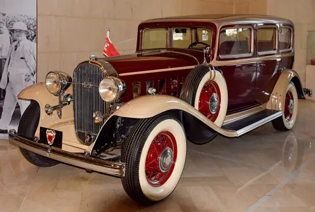
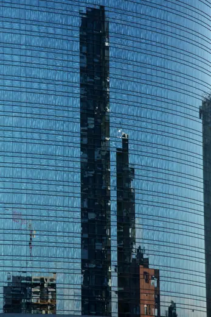
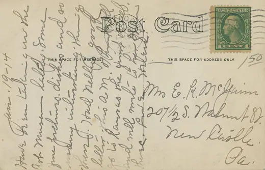
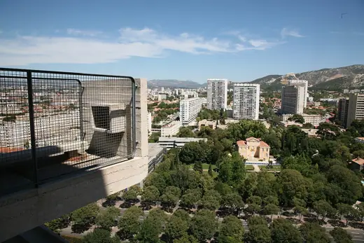

All 1,603 buildings
All 1,603 buildings on Discover Architecture, chosen for architecture students: modern masters, brutalism, regionalism, Japan, contemporary and parametric work, plus a few historic precedents.
 11 Diagonal StreetHelmut Jahn (Murphy/Jahn) · 1983
11 Diagonal StreetHelmut Jahn (Murphy/Jahn) · 1983 122 Leadenhall StreetRogers Stirk Harbour + Partners · 2014
122 Leadenhall StreetRogers Stirk Harbour + Partners · 2014 2 Willow RoadErnő Goldfinger · 1939
2 Willow RoadErnő Goldfinger · 1939 21_21 Design SightTadao Ando · 2007
21_21 Design SightTadao Ando · 2007 21st Century Museum of Contemporary Art, KanazawaSANAA · 2004
21st Century Museum of Contemporary Art, KanazawaSANAA · 2004 25 bis rue FranklinAuguste Perret · 1904
25 bis rue FranklinAuguste Perret · 1904 30 Rockefeller PlazaRaymond Hood · 1933
30 Rockefeller PlazaRaymond Hood · 1933 30 St Mary AxeFoster and Partners · 2004
30 St Mary AxeFoster and Partners · 2004 330 North WabashLudwig Mies van der Rohe · 1973
330 North WabashLudwig Mies van der Rohe · 1973 4 World Trade CenterFumihiko Maki · 2013
4 World Trade CenterFumihiko Maki · 2013 41 Cooper SquareMorphosis, Thom Mayne · 2009
41 Cooper SquareMorphosis, Thom Mayne · 2009 53W53Ateliers Jean Nouvel · 2019
53W53Ateliers Jean Nouvel · 2019 555 California StreetWurster, Bernardi & Emmons and SOM, with Pietro Belluschi · 1969
555 California StreetWurster, Bernardi & Emmons and SOM, with Pietro Belluschi · 1969 56 Leonard StreetHerzog & de Meuron · 2017
56 Leonard StreetHerzog & de Meuron · 2017 70 Pine StreetClinton and Russell · 1932
70 Pine StreetClinton and Russell · 1932 78 DerngateCharles Rennie Mackintosh · 1917
78 DerngateCharles Rennie Mackintosh · 1917 8 HouseBIG · 2010
8 HouseBIG · 2010 8 Spruce StreetFrank Gehry · 2011
8 Spruce StreetFrank Gehry · 2011 860-880 Lake Shore DriveLudwig Mies van der Rohe · 1951
860-880 Lake Shore DriveLudwig Mies van der Rohe · 1951 Aalto House (Riihitie)Alvar Aalto and Aino Aalto · 1936
Aalto House (Riihitie)Alvar Aalto and Aino Aalto · 1936 Aalto TheatreAlvar Aalto · 1988
Aalto TheatreAlvar Aalto · 1988 Aalto-HochhausAlvar Aalto · 1962
Aalto-HochhausAlvar Aalto · 1962 Aarhus City HallArne Jacobsen, Erik Moller · 1941
Aarhus City HallArne Jacobsen, Erik Moller · 1941 Abbey of St. BenedictusbergDom Hans van der Laan · 1968
Abbey of St. BenedictusbergDom Hans van der Laan · 1968 Abrahamic Family HouseAdjaye Associates · 2023
Abrahamic Family HouseAdjaye Associates · 2023 Academy of Arts, HanseatenwegWerner Düttmann · 1960
Academy of Arts, HanseatenwegWerner Düttmann · 1960 Aceh Tsunami MuseumRidwan Kamil · 2009
Aceh Tsunami MuseumRidwan Kamil · 2009 Acropolis MuseumBernard Tschumi · 2009
Acropolis MuseumBernard Tschumi · 2009 ACROS FukuokaEmilio Ambasz with Nihon Sekkei · 1995
ACROS FukuokaEmilio Ambasz with Nihon Sekkei · 1995 Adelaide Festival CentreHassell, McConnell, Smith & Johnson · 1973
Adelaide Festival CentreHassell, McConnell, Smith & Johnson · 1973 ADGB Trade Union SchoolHannes Meyer and Hans Wittwer · 1930
ADGB Trade Union SchoolHannes Meyer and Hans Wittwer · 1930 Adler PlanetariumErnest Grunsfeld Jr. · 1930
Adler PlanetariumErnest Grunsfeld Jr. · 1930 Adziogol LighthouseVladimir Shukhov · 1911
Adziogol LighthouseVladimir Shukhov · 1911 AEG Turbine FactoryPeter Behrens · 1909
AEG Turbine FactoryPeter Behrens · 1909 Aga Khan MuseumFumihiko Maki · 2014
Aga Khan MuseumFumihiko Maki · 2014 Aga Khan University HospitalPayette Associates · 1985
Aga Khan University HospitalPayette Associates · 1985 Agora TheatreUNStudio · 2007
Agora TheatreUNStudio · 2007 Ahwahnee HotelGilbert Stanley Underwood · 1927
Ahwahnee HotelGilbert Stanley Underwood · 1927 Akino Fuku Art MuseumTerunobu Fujimori · 1998
Akino Fuku Art MuseumTerunobu Fujimori · 1998 Al Faisaliah TowerFoster + Partners · 2000
Al Faisaliah TowerFoster + Partners · 2000 Al Hamra TowerSkidmore, Owings & Merrill · 2011
Al Hamra TowerSkidmore, Owings & Merrill · 2011 Al Janoub StadiumZaha Hadid Architects · 2019
Al Janoub StadiumZaha Hadid Architects · 2019 Al-Azhar ParkSites International · 2005
Al-Azhar ParkSites International · 2005 Al-Irsyad MosqueRidwan Kamil · 2010
Al-Irsyad MosqueRidwan Kamil · 2010 Al-Shaheed MonumentSaman Kamal, Ismail Fatah Al Turk · 1983
Al-Shaheed MonumentSaman Kamal, Ismail Fatah Al Turk · 1983 Alexandra Road EstateNeave Brown · 1978
Alexandra Road EstateNeave Brown · 1978 AlhambraNasrid builders · 14th c.
AlhambraNasrid builders · 14th c. Alhamra Arts CouncilNayyar Ali Dada · 1992
Alhamra Arts CouncilNayyar Ali Dada · 1992 Alisher Navoi Opera and Ballet TheatreAlexey Shchusev · 1947
Alisher Navoi Opera and Ballet TheatreAlexey Shchusev · 1947 Allen Lambert Galleria, Brookfield PlaceSantiago Calatrava · 1992
Allen Lambert Galleria, Brookfield PlaceSantiago Calatrava · 1992 Allianz ArenaHerzog & de Meuron · 2005
Allianz ArenaHerzog & de Meuron · 2005 Altare della PatriaGiuseppe Sacconi · 1911
Altare della PatriaGiuseppe Sacconi · 1911 Alte NationalgalerieFriedrich August Stüler · 1876
Alte NationalgalerieFriedrich August Stüler · 1876 Alvar Aalto Cultural CentreAlvar Aalto · 1962
Alvar Aalto Cultural CentreAlvar Aalto · 1962 Amdavad ni GufaBalkrishna Doshi · 1995
Amdavad ni GufaBalkrishna Doshi · 1995 Amon Carter Museum of American ArtPhilip Johnson · 1961
Amon Carter Museum of American ArtPhilip Johnson · 1961 Amsterdam Orphanage (Burgerweeshuis)Aldo van Eyck · 1960
Amsterdam Orphanage (Burgerweeshuis)Aldo van Eyck · 1960 Anacleto Angelini Innovation CenterAlejandro Aravena (Elemental) · 2014
Anacleto Angelini Innovation CenterAlejandro Aravena (Elemental) · 2014 Anahuacalli MuseumDiego Rivera, Juan O'Gorman · 1964
Anahuacalli MuseumDiego Rivera, Juan O'Gorman · 1964 Ananda TempleBagan builders · 1105
Ananda TempleBagan builders · 1105 Andrew Melville HallJames Stirling · 1968
Andrew Melville HallJames Stirling · 1968 Angkor WatKhmer builders · c. 1150
Angkor WatKhmer builders · c. 1150 AnitkabirEmin Onat, Orhan Arda · 1953
AnitkabirEmin Onat, Orhan Arda · 1953 Ankara Railway StationŞekip Akalın · 1937
Ankara Railway StationŞekip Akalın · 1937 Antwerp Law CourtsRichard Rogers Partnership · 2006
Antwerp Law CourtsRichard Rogers Partnership · 2006 Anzac MemorialBruce Dellit · 1934
Anzac MemorialBruce Dellit · 1934 Anzeiger-HochhausFritz Höger · 1928
Anzeiger-HochhausFritz Höger · 1928 Aomori Museum of ArtJun Aoki · 2006
Aomori Museum of ArtJun Aoki · 2006 Aqua TowerJeanne Gang · 2009
Aqua TowerJeanne Gang · 2009 Ara Pacis MuseumRichard Meier · 2006
Ara Pacis MuseumRichard Meier · 2006 Aranya Low Cost HousingB. V. Doshi · 1989
Aranya Low Cost HousingB. V. Doshi · 1989 Arc de TriomfJosep Vilaseca i Casanovas · 1888
Arc de TriomfJosep Vilaseca i Casanovas · 1888 ArcelorMittal OrbitAnish Kapoor, Cecil Balmond · 2012
ArcelorMittal OrbitAnish Kapoor, Cecil Balmond · 2012 Arctic CathedralJan Inge Hovig · 1965
Arctic CathedralJan Inge Hovig · 1965 Ariston ClubMarcel Breuer · 1948
Ariston ClubMarcel Breuer · 1948 Arken Museum of Contemporary ArtSøren Robert Lund · 1996
Arken Museum of Contemporary ArtSøren Robert Lund · 1996 Armenian Genocide MemorialArthur Tarkhanyan, Sashur Kalashyan · 1967
Armenian Genocide MemorialArthur Tarkhanyan, Sashur Kalashyan · 1967 ARoS Aarhus KunstmuseumSchmidt Hammer Lassen · 2004
ARoS Aarhus KunstmuseumSchmidt Hammer Lassen · 2004 Art Gallery of AlbertaRandall Stout · 2010
Art Gallery of AlbertaRandall Stout · 2010 Art Gallery of OntarioFrank Gehry · 2008
Art Gallery of OntarioFrank Gehry · 2008 Art Institute of Chicago, Modern WingRenzo Piano Building Workshop · 2009
Art Institute of Chicago, Modern WingRenzo Piano Building Workshop · 2009 Art Tower MitoArata Isozaki · 1990
Art Tower MitoArata Isozaki · 1990 Arts Centre MelbourneRoy Grounds · 1984
Arts Centre MelbourneRoy Grounds · 1984 ArtScience MuseumSafdie Architects · 2011
ArtScience MuseumSafdie Architects · 2011 Asahi Group Oyamazaki Villa Museum of ArtTadao Ando · 1996
Asahi Group Oyamazaki Villa Museum of ArtTadao Ando · 1996 Asakusa Culture Tourist Information CenterKengo Kuma · 2012
Asakusa Culture Tourist Information CenterKengo Kuma · 2012 Asian Art Museum of San FranciscoGae Aulenti · 2003
Asian Art Museum of San FranciscoGae Aulenti · 2003 Asilo Sant'EliaGiuseppe Terragni · 1937
Asilo Sant'EliaGiuseppe Terragni · 1937 Astrup Fearnley MuseumRenzo Piano · 2012
Astrup Fearnley MuseumRenzo Piano · 2012 AT&T Building (550 Madison Avenue)Philip Johnson, John Burgee · 1984
AT&T Building (550 Madison Avenue)Philip Johnson, John Burgee · 1984 Atatürk Cultural CenterMurat Tabanlioglu · 2021
Atatürk Cultural CenterMurat Tabanlioglu · 2021 Atatürk LibrarySedad Hakkı Eldem · 1976
Atatürk LibrarySedad Hakkı Eldem · 1976 Atelier BardillValerio Olgiati · 2007
Atelier BardillValerio Olgiati · 2007 Athens Olympic Stadium roofSantiago Calatrava · 2004
Athens Olympic Stadium roofSantiago Calatrava · 2004 Atlanta Central LibraryMarcel Breuer · 1980
Atlanta Central LibraryMarcel Breuer · 1980 AtomiumAndre Waterkeyn, Andre Polak · 1958
AtomiumAndre Waterkeyn, Andre Polak · 1958 Auckland Art GalleryFJMT, Archimedia · 2011
Auckland Art GalleryFJMT, Archimedia · 2011 Auditorio de TenerifeSantiago Calatrava · 2003
Auditorio de TenerifeSantiago Calatrava · 2003 Auditorium Niccolò PaganiniRenzo Piano · 2001
Auditorium Niccolò PaganiniRenzo Piano · 2001 Auditorium Parco della MusicaRenzo Piano Building Workshop · 2002
Auditorium Parco della MusicaRenzo Piano Building Workshop · 2002 Aula MagnaRalph Erskine · 1997
Aula MagnaRalph Erskine · 1997 Aula Magna, Central University of VenezuelaCarlos Raúl Villanueva · 1953
Aula Magna, Central University of VenezuelaCarlos Raúl Villanueva · 1953 Aula TU DelftVan den Broek en Bakema · 1966
Aula TU DelftVan den Broek en Bakema · 1966 Aurora PlaceRenzo Piano Building Workshop · 2000
Aurora PlaceRenzo Piano Building Workshop · 2000 Australia SquareHarry Seidler · 1967
Australia SquareHarry Seidler · 1967 Australian National Maritime MuseumPhilip Cox · 1991
Australian National Maritime MuseumPhilip Cox · 1991 Australian War MemorialEmil Sodersten, John Crust · 1941
Australian War MemorialEmil Sodersten, John Crust · 1941 Austrian Parliament BuildingTheophil Hansen · 1883
Austrian Parliament BuildingTheophil Hansen · 1883 Austrian Postal Savings BankOtto Wagner · 1906
Austrian Postal Savings BankOtto Wagner · 1906 Autrique HouseVictor Horta · 1893
Autrique HouseVictor Horta · 1893 Avicenna MausoleumHoushang Seyhoun · 1954
Avicenna MausoleumHoushang Seyhoun · 1954 Avicii Arena (Globen)Berg Arkitektkontor · 1989
Avicii Arena (Globen)Berg Arkitektkontor · 1989 Awaji YumebutaiTadao Ando · 2000
Awaji YumebutaiTadao Ando · 2000 Azadi TowerHossein Amanat · 1971
Azadi TowerHossein Amanat · 1971 Azerbaijan Carpet MuseumFranz Janz · 2014
Azerbaijan Carpet MuseumFranz Janz · 2014 Bacardi BuildingEsteban Rodríguez-Castells, Rafael Fernández Ruenes · 1930
Bacardi BuildingEsteban Rodríguez-Castells, Rafael Fernández Ruenes · 1930 Badshahi MosqueMughal builders · 1673
Badshahi MosqueMughal builders · 1673 Bagsværd ChurchJørn Utzon · 1976
Bagsværd ChurchJørn Utzon · 1976 Baha'i Temple of South AmericaHariri Pontarini Architects · 2016
Baha'i Temple of South AmericaHariri Pontarini Architects · 2016
Bahrain National MuseumKrohn & Hartvig Rasmussen · 1988 Bahrain National TheatreArchitecture-Studio · 2012
Bahrain National TheatreArchitecture-Studio · 2012 Bahrain World Trade CenterAtkins · 2008
Bahrain World Trade CenterAtkins · 2008 Bait ur Rouf MosqueMarina Tabassum · 2012
Bait ur Rouf MosqueMarina Tabassum · 2012 Baitul MukarramAbdulhusein M. Thariani · 1968
Baitul MukarramAbdulhusein M. Thariani · 1968 Baker HouseAlvar Aalto · 1949
Baker HouseAlvar Aalto · 1949 Bakhmetevsky Bus GarageKonstantin Melnikov with Vladimir Shukhov · 1928
Bakhmetevsky Bus GarageKonstantin Melnikov with Vladimir Shukhov · 1928 Balfron TowerErno Goldfinger · 1967
Balfron TowerErno Goldfinger · 1967 Bangkok Art and Culture CentreRobert G. Boughey & Associates · 2008
Bangkok Art and Culture CentreRobert G. Boughey & Associates · 2008 Bank of America TowerCookfox · 2009
Bank of America TowerCookfox · 2009 Bank of China TowerI. M. Pei · 1990
Bank of China TowerI. M. Pei · 1990 Bank of Georgia headquartersGeorge Chakhava · 1975
Bank of Georgia headquartersGeorge Chakhava · 1975 Bank of London and South AmericaClorindo Testa, SEPRA · 1966
Bank of London and South AmericaClorindo Testa, SEPRA · 1966 Bankinter BuildingRafael Moneo and Ramón Bescós · 1977
Bankinter BuildingRafael Moneo and Ramón Bescós · 1977 Barbican CentreChamberlin, Powell and Bon · 1982
Barbican CentreChamberlin, Powell and Bon · 1982 Barbican EstateChamberlin, Powell and Bon · 1982
Barbican EstateChamberlin, Powell and Bon · 1982 Barcelona PavilionMies van der Rohe, Lilly Reich · 1929
Barcelona PavilionMies van der Rohe, Lilly Reich · 1929 Basilica of Our Lady of AltagraciaPierre Dupre, Andre Dunoyer de Segonzac · 1971
Basilica of Our Lady of AltagraciaPierre Dupre, Andre Dunoyer de Segonzac · 1971 Basilica of Our Lady of GuadalupePedro Ramirez Vazquez · 1976
Basilica of Our Lady of GuadalupePedro Ramirez Vazquez · 1976 Basilica of Our Lady of Peace of YamoussoukroPierre Fakhoury · 1989
Basilica of Our Lady of Peace of YamoussoukroPierre Fakhoury · 1989 Basilica of Sainte-Anne du CongoRoger Erell · 1949
Basilica of Sainte-Anne du CongoRoger Erell · 1949 Basilica of St. Pius XPierre Vago, Eugene Freyssinet · 1958
Basilica of St. Pius XPierre Vago, Eugene Freyssinet · 1958 Basilica of the AnnunciationGiovanni Muzio · 1969
Basilica of the AnnunciationGiovanni Muzio · 1969 Basilica of the Holy TrinityAlexandros Tombazis · 2007
Basilica of the Holy TrinityAlexandros Tombazis · 2007 Bat Yam City HallAlfred Neumann, Zvi Hecker · 1963
Bat Yam City HallAlfred Neumann, Zvi Hecker · 1963 Bata Shoe MuseumRaymond Moriyama · 1995
Bata Shoe MuseumRaymond Moriyama · 1995 Bauhaus DessauWalter Gropius · 1926
Bauhaus DessauWalter Gropius · 1926 Bauhaus-ArchivWalter Gropius, Alex Cvijanovic · 1979
Bauhaus-ArchivWalter Gropius, Alex Cvijanovic · 1979 BeehiveBasil Spence · 1981
BeehiveBasil Spence · 1981 Beijing National Aquatics CenterPTW Architects · 2008
Beijing National Aquatics CenterPTW Architects · 2008 Beijing National StadiumHerzog & de Meuron · 2008
Beijing National StadiumHerzog & de Meuron · 2008 Beinecke Rare Book & Manuscript LibraryGordon Bunshaft, SOM · 1963
Beinecke Rare Book & Manuscript LibraryGordon Bunshaft, SOM · 1963 Beira railway stationPaulo de Melo Sampaio, Francisco Castro · 1966
Beira railway stationPaulo de Melo Sampaio, Francisco Castro · 1966 Beitou Public LibraryBio-architecture Formosana · 2006
Beitou Public LibraryBio-architecture Formosana · 2006 Belgrade Fair Hall 1Milorad Pantovic, Branko Zezelj · 1957
Belgrade Fair Hall 1Milorad Pantovic, Branko Zezelj · 1957 Bella Sky Hotel3XN · 2011
Bella Sky Hotel3XN · 2011 BellesguardAntoni Gaudí · 1909
BellesguardAntoni Gaudí · 1909 Bellevue TheatreArne Jacobsen · 1936
Bellevue TheatreArne Jacobsen · 1936 Belvedere 21Karl Schwanzer · 1962
Belvedere 21Karl Schwanzer · 1962 Belém Cultural CenterVittorio Gregotti, Manuel Salgado · 1992
Belém Cultural CenterVittorio Gregotti, Manuel Salgado · 1992 Benedictine Monastery ChapelGabriel Guarda, Martín Correa · 1964
Benedictine Monastery ChapelGabriel Guarda, Martín Correa · 1964 Benesse House MuseumTadao Ando · 1992
Benesse House MuseumTadao Ando · 1992 Bergisel Ski JumpZaha Hadid Architects · 2002
Bergisel Ski JumpZaha Hadid Architects · 2002 Berkeley Art Museum (original building)Mario Ciampi · 1970
Berkeley Art Museum (original building)Mario Ciampi · 1970 BerlaymontLucien De Vestel, Jean Gilson, André and Jean Polak · 1969
BerlaymontLucien De Vestel, Jean Gilson, André and Jean Polak · 1969 Berlin State Library (Haus Potsdamer Straße)Hans Scharoun · 1978
Berlin State Library (Haus Potsdamer Straße)Hans Scharoun · 1978 Berliner PhilharmonieHans Scharoun · 1963
Berliner PhilharmonieHans Scharoun · 1963 Beth Sholom SynagogueFrank Lloyd Wright · 1959
Beth Sholom SynagogueFrank Lloyd Wright · 1959 Beurs van BerlageHendrik Petrus Berlage · 1903
Beurs van BerlageHendrik Petrus Berlage · 1903 Bibliotheca AlexandrinaSnohetta · 2002
Bibliotheca AlexandrinaSnohetta · 2002 Bibliothèque nationale de FranceDominique Perrault · 1996
Bibliothèque nationale de FranceDominique Perrault · 1996 BierpinselRalf Schüler and Ursulina Schüler-Witte · 1976
BierpinselRalf Schüler and Ursulina Schüler-Witte · 1976 Bihar MuseumMaki and Associates, Opolis · 2017
Bihar MuseumMaki and Associates, Opolis · 2017 BildmuseetHenning Larsen Architects · 2012
BildmuseetHenning Larsen Architects · 2012 Binoculars BuildingFrank Gehry with Claes Oldenburg and Coosje van Bruggen · 1991
Binoculars BuildingFrank Gehry with Claes Oldenburg and Coosje van Bruggen · 1991 BiomuseoFrank Gehry · 2014
BiomuseoFrank Gehry · 2014 Bitexco Financial TowerCarlos Zapata · 2010
Bitexco Financial TowerCarlos Zapata · 2010 Black DiamondSchmidt Hammer Lassen · 1999
Black DiamondSchmidt Hammer Lassen · 1999 Bloch Building, Nelson-Atkins Museum of ArtSteven Holl · 2007
Bloch Building, Nelson-Atkins Museum of ArtSteven Holl · 2007 BMW Central BuildingZaha Hadid · 2005
BMW Central BuildingZaha Hadid · 2005 BMW WeltCoop Himmelb(l)au · 2007
BMW WeltCoop Himmelb(l)au · 2007 Boa Nova Tea HouseÁlvaro Siza · 1963
Boa Nova Tea HouseÁlvaro Siza · 1963 Bocconi University Urban CampusSANAA · 2019
Bocconi University Urban CampusSANAA · 2019 Bode MuseumErnst von Ihne · 1904
Bode MuseumErnst von Ihne · 1904 Bodegas GüellFrancesc Berenguer with Antoni Gaudí · 1901
Bodegas GüellFrancesc Berenguer with Antoni Gaudí · 1901 Bodegas YsiosSantiago Calatrava · 2001
Bodegas YsiosSantiago Calatrava · 2001 BoekentorenHenry van de Velde · 1942
BoekentorenHenry van de Velde · 1942 BolgenHenning Larsen Architects · 2009
BolgenHenning Larsen Architects · 2009 Bonnefanten MuseumAldo Rossi · 1995
Bonnefanten MuseumAldo Rossi · 1995 Bordeaux Law CourtsRichard Rogers Partnership · 1998
Bordeaux Law CourtsRichard Rogers Partnership · 1998 BorobudurSailendra builders · c. 825
BorobudurSailendra builders · c. 825 Borujerdi HouseUstad Ali Maryam · 1857
Borujerdi HouseUstad Ali Maryam · 1857
Bosco VerticaleStefano Boeri · 2014 Boston City HallKallmann McKinnell & Knowles · 1968
Boston City HallKallmann McKinnell & Knowles · 1968 Boston Public Library, McKim BuildingMcKim, Mead & White · 1895
Boston Public Library, McKim BuildingMcKim, Mead & White · 1895 Braga Municipal StadiumEduardo Souto de Moura · 2003
Braga Municipal StadiumEduardo Souto de Moura · 2003 Breuer BuildingMarcel Breuer · 1966
Breuer BuildingMarcel Breuer · 1966 Bridge of PeaceMichele De Lucchi · 2010
Bridge of PeaceMichele De Lucchi · 2010 Brion CemeteryCarlo Scarpa · 1978
Brion CemeteryCarlo Scarpa · 1978 Bruder Klaus Field ChapelPeter Zumthor · 2007
Bruder Klaus Field ChapelPeter Zumthor · 2007 Brussels-Central StationVictor Horta, Maxime Brunfaut · 1952
Brussels-Central StationVictor Horta, Maxime Brunfaut · 1952 Brücke MuseumWerner Düttmann · 1967
Brücke MuseumWerner Düttmann · 1967 BT TowerEric Bedford · 1964
BT TowerEric Bedford · 1964 BundeskunsthalleGustav Peichl · 1992
BundeskunsthalleGustav Peichl · 1992 Burj Al ArabTom Wright, Atkins · 1999
Burj Al ArabTom Wright, Atkins · 1999 Burj KhalifaSOM · 2010
Burj KhalifaSOM · 2010 Burkina Institute of TechnologyDiébédo Francis Kéré · 2020
Burkina Institute of TechnologyDiébédo Francis Kéré · 2020 Burrell CollectionBarry Gasson, John Meunier and Brit Andresen · 1983
Burrell CollectionBarry Gasson, John Meunier and Brit Andresen · 1983 Busan Cinema CenterCoop Himmelb(l)au · 2011
Busan Cinema CenterCoop Himmelb(l)au · 2011 BusárasMichael Scott · 1953
BusárasMichael Scott · 1953 Butaro District HospitalMASS Design Group · 2011
Butaro District HospitalMASS Design Group · 2011 Buzludzha MonumentGeorgi Stoilov · 1981
Buzludzha MonumentGeorgi Stoilov · 1981 Byker WallRalph Erskine · 1982
Byker WallRalph Erskine · 1982 Cabanon de Le CorbusierLe Corbusier · 1952
Cabanon de Le CorbusierLe Corbusier · 1952 Cadet Chapel, US Air Force AcademyWalter Netsch (SOM) · 1962
Cadet Chapel, US Air Force AcademyWalter Netsch (SOM) · 1962 Café De UnieJ. J. P. Oud · 1925
Café De UnieJ. J. P. Oud · 1925 Café MoskauJosef Kaiser · 1964
Café MoskauJosef Kaiser · 1964 Café SeeroseUlrich Müther · 1983
Café SeeroseUlrich Müther · 1983 Cairo TowerNaoum Shebib · 1961
Cairo TowerNaoum Shebib · 1961 CaixaForum BarcelonaJosep Puig i Cadafalch; Arata Isozaki (entrance) · 2002
CaixaForum BarcelonaJosep Puig i Cadafalch; Arata Isozaki (entrance) · 2002 CaixaForum MadridHerzog & de Meuron · 2008
CaixaForum MadridHerzog & de Meuron · 2008 Calgary Central LibrarySnøhetta, DIALOG · 2018
Calgary Central LibrarySnøhetta, DIALOG · 2018 California Academy of SciencesRenzo Piano · 2008
California Academy of SciencesRenzo Piano · 2008 Calouste Gulbenkian MuseumRuy Athouguia, Pedro Cid, Alberto Pessoa · 1969
Calouste Gulbenkian MuseumRuy Athouguia, Pedro Cid, Alberto Pessoa · 1969 Caltrans District 7 HeadquartersMorphosis, Thom Mayne · 2004
Caltrans District 7 HeadquartersMorphosis, Thom Mayne · 2004 Can LisJørn Utzon · 1972
Can LisJørn Utzon · 1972 Canadian Museum of HistoryDouglas Cardinal · 1989
Canadian Museum of HistoryDouglas Cardinal · 1989 Canary Wharf Underground StationFoster + Partners · 1999
Canary Wharf Underground StationFoster + Partners · 1999 Canton TowerInformation Based Architecture · 2010
Canton TowerInformation Based Architecture · 2010 CapitaGreenToyo Ito · 2014
CapitaGreenToyo Ito · 2014 Capital GateRMJM · 2011
Capital GateRMJM · 2011 CapitaSpringBIG, Carlo Ratti Associati · 2021
CapitaSpringBIG, Carlo Ratti Associati · 2021 Capitol ComplexLe Corbusier · c. 1962
Capitol ComplexLe Corbusier · c. 1962 Capitol Records BuildingWelton Becket (Louis Naidorf) · 1956
Capitol Records BuildingWelton Becket (Louis Naidorf) · 1956 Cardboard CathedralShigeru Ban · 2013
Cardboard CathedralShigeru Ban · 2013 Carnegie HallWilliam Burnet Tuthill · 1891
Carnegie HallWilliam Burnet Tuthill · 1891 Carpenter Center for the Visual ArtsLe Corbusier · 1963
Carpenter Center for the Visual ArtsLe Corbusier · 1963 Carpet Museum of IranAbdol Aziz Farmanfarmaian · 1977
Carpet Museum of IranAbdol Aziz Farmanfarmaian · 1977 Cartagena Roman Theatre MuseumRafael Moneo · 2008
Cartagena Roman Theatre MuseumRafael Moneo · 2008 Casa BatllóAntoni Gaudi · 1906
Casa BatllóAntoni Gaudi · 1906 Casa BlocJosep Lluís Sert, Josep Torres Clavé and Joan Baptista Subirana · 1936
Casa BlocJosep Lluís Sert, Josep Torres Clavé and Joan Baptista Subirana · 1936 Casa CalvetAntoni Gaudí · 1900
Casa CalvetAntoni Gaudí · 1900 Casa da MúsicaOMA · 2005
Casa da MúsicaOMA · 2005 Casa das CanoasOscar Niemeyer · 1953
Casa das CanoasOscar Niemeyer · 1953 Casa das Histórias Paula RegoEduardo Souto de Moura · 2009
Casa das Histórias Paula RegoEduardo Souto de Moura · 2009 Casa de VidroLina Bo Bardi · 1951
Casa de VidroLina Bo Bardi · 1951 Casa del FascioGiuseppe Terragni · 1936
Casa del FascioGiuseppe Terragni · 1936 Casa FusterLluís Domènech i Montaner · 1911
Casa FusterLluís Domènech i Montaner · 1911 Casa GilardiLuis Barragán · 1976
Casa GilardiLuis Barragán · 1976 Casa Luis BarragánLuis Barragán · 1948
Casa Luis BarragánLuis Barragán · 1948 Casa MalaparteAdalberto Libera and Curzio Malaparte · 1942
Casa MalaparteAdalberto Libera and Curzio Malaparte · 1942 Casa MilàAntoni Gaudi · 1912
Casa MilàAntoni Gaudi · 1912 Casa ModernistaGregori Warchavchik · 1928
Casa ModernistaGregori Warchavchik · 1928 Casa PlanellsJosep Maria Jujol · 1924
Casa PlanellsJosep Maria Jujol · 1924 Casa sobre el ArroyoAmancio Williams · 1946
Casa sobre el ArroyoAmancio Williams · 1946 Case Study House #21 (Bailey House)Pierre Koenig · 1959
Case Study House #21 (Bailey House)Pierre Koenig · 1959 Castel BérangerHector Guimard · 1898
Castel BérangerHector Guimard · 1898 Castello di RivoliAndrea Bruno · 1984
Castello di RivoliAndrea Bruno · 1984 Castelvecchio MuseumCarlo Scarpa · 1975
Castelvecchio MuseumCarlo Scarpa · 1975 CatetinhoOscar Niemeyer · 1956
CatetinhoOscar Niemeyer · 1956 Cathedral of BrasíliaOscar Niemeyer · 1970
Cathedral of BrasíliaOscar Niemeyer · 1970 Cathedral of Christ the LightCraig W. Hartman (SOM) · 2008
Cathedral of Christ the LightCraig W. Hartman (SOM) · 2008 Cathedral of LearningCharles Klauder · 1937
Cathedral of LearningCharles Klauder · 1937 Cathedral of Our Lady of the AngelsRafael Moneo · 2002
Cathedral of Our Lady of the AngelsRafael Moneo · 2002 Cathedral of Saint Mary of the AssumptionPietro Belluschi and Pier Luigi Nervi · 1971
Cathedral of Saint Mary of the AssumptionPietro Belluschi and Pier Luigi Nervi · 1971 Cayan TowerSOM · 2013
Cayan TowerSOM · 2013 CBS BuildingEero Saarinen · 1965
CBS BuildingEero Saarinen · 1965 CCTV HeadquartersOMA · 2012
CCTV HeadquartersOMA · 2012 Cedar Rock (Walter House)Frank Lloyd Wright · 1950
Cedar Rock (Walter House)Frank Lloyd Wright · 1950 Centennial HallMax Berg · 1913
Centennial HallMax Berg · 1913 Centennial Hall, Tokyo Institute of TechnologyKazuo Shinohara · 1987
Centennial Hall, Tokyo Institute of TechnologyKazuo Shinohara · 1987 Centraal BeheerHerman Hertzberger · 1972
Centraal BeheerHerman Hertzberger · 1972 Central Library (UNAM)Juan O'Gorman, Gustavo Saavedra, Juan Martínez de Velasco · 1956
Central Library (UNAM)Juan O'Gorman, Gustavo Saavedra, Juan Martínez de Velasco · 1956 Central MarketJean Desbois, Louis Chauchon · 1937
Central MarketJean Desbois, Louis Chauchon · 1937 Centre de Cultura Contemporània de Barcelona (CCCB)Viaplana i Piñón · 1994
Centre de Cultura Contemporània de Barcelona (CCCB)Viaplana i Piñón · 1994 Centre for Development StudiesLaurie Baker · 1971
Centre for Development StudiesLaurie Baker · 1971 Centre for Fine Arts (Bozar)Victor Horta · 1928
Centre for Fine Arts (Bozar)Victor Horta · 1928 Centre PompidouRenzo Piano, Richard Rogers · 1977
Centre PompidouRenzo Piano, Richard Rogers · 1977 Centre Pompidou-MetzShigeru Ban, Jean de Gastines · 2010
Centre Pompidou-MetzShigeru Ban, Jean de Gastines · 2010 Centro BotínRenzo Piano Building Workshop · 2017
Centro BotínRenzo Piano Building Workshop · 2017 Centro Cultural de CaliRogelio Salmona · 1990
Centro Cultural de CaliRogelio Salmona · 1990 Centro Cultural Gabriela MistralCristian Fernandez Eyzaguirre · 2010
Centro Cultural Gabriela MistralCristian Fernandez Eyzaguirre · 2010 Centro de Arte Moderna GulbenkianLeslie Martin · 1983
Centro de Arte Moderna GulbenkianLeslie Martin · 1983 Centro Urbano Presidente AlemánMario Pani · 1949
Centro Urbano Presidente AlemánMario Pani · 1949 Centrosoyuz BuildingLe Corbusier · 1936
Centrosoyuz BuildingLe Corbusier · 1936 Century Plaza TowersMinoru Yamasaki · 1975
Century Plaza TowersMinoru Yamasaki · 1975 CEPT UniversityB. V. Doshi · 1966
CEPT UniversityB. V. Doshi · 1966 Ceramic Park MinoArata Isozaki · 2002
Ceramic Park MinoArata Isozaki · 2002 Chaktomuk Conference HallVann Molyvann · 1961
Chaktomuk Conference HallVann Molyvann · 1961 Chand BaoriUnknown builders · c. 800
Chand BaoriUnknown builders · c. 800 Chapel of St. IgnatiusSteven Holl · 1997
Chapel of St. IgnatiusSteven Holl · 1997 Chapelle du RosaireHenri Matisse, Auguste Perret · 1951
Chapelle du RosaireHenri Matisse, Auguste Perret · 1951 Chassé TheaterHerman Hertzberger · 1995
Chassé TheaterHerman Hertzberger · 1995 Chhatrapati Shivaji Maharaj International Airport Terminal 2Skidmore, Owings & Merrill · 2014
Chhatrapati Shivaji Maharaj International Airport Terminal 2Skidmore, Owings & Merrill · 2014 Chicago Board of Trade BuildingHolabird & Root · 1930
Chicago Board of Trade BuildingHolabird & Root · 1930 Chichu Art MuseumTadao Ando · 2004
Chichu Art MuseumTadao Ando · 2004 Chiesa del Santo VoltoMario Botta · 2006
Chiesa del Santo VoltoMario Botta · 2006 Chikatsu Asuka MuseumTadao Ando · 1994
Chikatsu Asuka MuseumTadao Ando · 1994 Children's Memorial, Yad VashemMoshe Safdie · 1987
Children's Memorial, Yad VashemMoshe Safdie · 1987 ChilehausFritz Höger · 1924
ChilehausFritz Höger · 1924 China Pavilion, Expo 2010He Jingtang · 2010
China Pavilion, Expo 2010He Jingtang · 2010 China Steel Corporation HeadquartersKris Yao · 2012
China Steel Corporation HeadquartersKris Yao · 2012 Christ Church LutheranEliel Saarinen · 1949
Christ Church LutheranEliel Saarinen · 1949 Christchurch Town HallWarren and Mahoney · 1972
Christchurch Town HallWarren and Mahoney · 1972 Christi AuferstehungGottfried Böhm · 1970
Christi AuferstehungGottfried Böhm · 1970 Chrysler BuildingWilliam Van Alen · 1930
Chrysler BuildingWilliam Van Alen · 1930 Chulalongkorn University Centenary ParkLandprocess · 2017
Chulalongkorn University Centenary ParkLandprocess · 2017 Church of Cristo ObreroEladio Dieste · 1960
Church of Cristo ObreroEladio Dieste · 1960 Church of Saint Anthony of PolanaNuno Craveiro Lopes · 1962
Church of Saint Anthony of PolanaNuno Craveiro Lopes · 1962 Church of Saint Francis of Assisi, PampulhaOscar Niemeyer · 1943
Church of Saint Francis of Assisi, PampulhaOscar Niemeyer · 1943 Church of Saint George, LalibelaZagwe builders · c. 1200
Church of Saint George, LalibelaZagwe builders · c. 1200 Church of Saint-Nicolas, HérémenceWalter Maria Förderer · 1971
Church of Saint-Nicolas, HérémenceWalter Maria Förderer · 1971 Church of San Giovanni BattistaMario Botta · 1996
Church of San Giovanni BattistaMario Botta · 1996 Church of St Joan of ArcLouis Arretche · 1979
Church of St Joan of ArcLouis Arretche · 1979 Church of St. Clement of OhridSlavko Brezoski · 1990
Church of St. Clement of OhridSlavko Brezoski · 1990 Church of the Autostrada del SoleGiovanni Michelucci · 1964
Church of the Autostrada del SoleGiovanni Michelucci · 1964 Church of the CrossAlvar Aalto · 1978
Church of the CrossAlvar Aalto · 1978 Church of the Holy SacrificeLeandro Locsin · 1955
Church of the Holy SacrificeLeandro Locsin · 1955 Church of the LightTadao Ando · 1989
Church of the LightTadao Ando · 1989 Church of the Most Sacred Heart of Our LordJože Plečnik · 1932
Church of the Most Sacred Heart of Our LordJože Plečnik · 1932 Church of the Three CrossesAlvar Aalto · 1958
Church of the Three CrossesAlvar Aalto · 1958 Church on the WaterTadao Ando · 1988
Church on the WaterTadao Ando · 1988 Church on the WindTadao Ando · 1986
Church on the WindTadao Ando · 1986 Cidade das ArtesChristian de Portzamparc · 2013
Cidade das ArtesChristian de Portzamparc · 2013 Cinema ImperoMario Messina · 1937
Cinema ImperoMario Messina · 1937 City Hall and Central Library, The HagueRichard Meier · 1995
City Hall and Central Library, The HagueRichard Meier · 1995 City Hall, LondonFoster and Partners · 2002
City Hall, LondonFoster and Partners · 2002 City of Arts and SciencesSantiago Calatrava · 1998
City of Arts and SciencesSantiago Calatrava · 1998 City Theater of TehranAli Sardar Afkhami · 1972
City Theater of TehranAli Sardar Afkhami · 1972 City-Hochhaus LeipzigHermann Henselmann · 1972
City-Hochhaus LeipzigHermann Henselmann · 1972 Cité de la musiqueChristian de Portzamparc · 1995
Cité de la musiqueChristian de Portzamparc · 1995 Cité de Refuge (Salvation Army Hostel)Le Corbusier · 1933
Cité de Refuge (Salvation Army Hostel)Le Corbusier · 1933 Ciudad Universitaria, UNAMMario Pani, Enrique del Moral · 1954
Ciudad Universitaria, UNAMMario Pani, Enrique del Moral · 1954 Civic Center of LimaAdolfo Córdova and team · 1974
Civic Center of LimaAdolfo Córdova and team · 1974 Claudio Santoro National TheatreOscar Niemeyer · 1966
Claudio Santoro National TheatreOscar Niemeyer · 1966 Clifton CathedralPercy Thomas Partnership · 1973
Clifton CathedralPercy Thomas Partnership · 1973 Clore Gallery, Tate BritainJames Stirling, Michael Wilford · 1987
Clore Gallery, Tate BritainJames Stirling, Michael Wilford · 1987 CN TowerJohn Andrews · 1976
CN TowerJohn Andrews · 1976 CNITBernard Zehrfuss, Nicolas Esquillan · 1958
CNITBernard Zehrfuss, Nicolas Esquillan · 1958 Co-Cathedral of the Great Mother of God (Gran Madre di Dio)Gio Ponti · 1970
Co-Cathedral of the Great Mother of God (Gran Madre di Dio)Gio Ponti · 1970 Coconut PalaceFrancisco Manosa · 1978
Coconut PalaceFrancisco Manosa · 1978 Cologne Central MosquePaul Bohm · 2017
Cologne Central MosquePaul Bohm · 2017 Columbus LighthouseJ. L. Gleave · 1992
Columbus LighthouseJ. L. Gleave · 1992 Commerzbank TowerFoster and Partners · 1997
Commerzbank TowerFoster and Partners · 1997 ConcertgebouwAdolf Leonard van Gendt · 1888
ConcertgebouwAdolf Leonard van Gendt · 1888 Concord PavilionFrank Gehry · 1975
Concord PavilionFrank Gehry · 1975 Constance Perkins HouseRichard Neutra · 1955
Constance Perkins HouseRichard Neutra · 1955 Constitutional Court of South AfricaOMM Design Workshop, Urban Solutions · 2004
Constitutional Court of South AfricaOMM Design Workshop, Urban Solutions · 2004 Contemporary Jewish MuseumDaniel Libeskind · 2008
Contemporary Jewish MuseumDaniel Libeskind · 2008 Convention Centre DublinKevin Roche · 2010
Convention Centre DublinKevin Roche · 2010 Copan BuildingOscar Niemeyer · 1966
Copan BuildingOscar Niemeyer · 1966 Copenhagen Opera HouseHenning Larsen · 2005
Copenhagen Opera HouseHenning Larsen · 2005 CopenHillBIG · 2019
CopenHillBIG · 2019 Coventry CathedralBasil Spence · 1962
Coventry CathedralBasil Spence · 1962 Crucible TheatreRHWL · 1971
Crucible TheatreRHWL · 1971 Crypt of Colonia GuellAntoni Gaudi · 1914
Crypt of Colonia GuellAntoni Gaudi · 1914 Crystal Bridges Museum of American ArtSafdie Architects · 2011
Crystal Bridges Museum of American ArtSafdie Architects · 2011 Crystal CathedralPhilip Johnson · 1980
Crystal CathedralPhilip Johnson · 1980 Cuadra San CristóbalLuis Barragán · 1968
Cuadra San CristóbalLuis Barragán · 1968 Cube HousesPiet Blom · 1984
Cube HousesPiet Blom · 1984 Curutchet HouseLe Corbusier · 1953
Curutchet HouseLe Corbusier · 1953 Cuvilliés TheatreFrançois de Cuvilliés · 1753
Cuvilliés TheatreFrançois de Cuvilliés · 1753 Cymbalista SynagogueMario Botta · 1998
Cymbalista SynagogueMario Botta · 1998 D. T. Suzuki MuseumYoshio Taniguchi · 2011
D. T. Suzuki MuseumYoshio Taniguchi · 2011 Dallas Museum of ArtEdward Larrabee Barnes · 1984
Dallas Museum of ArtEdward Larrabee Barnes · 1984 Dancing HouseVlado Milunic, Frank Gehry · 1996
Dancing HouseVlado Milunic, Frank Gehry · 1996 Danish Jewish MuseumDaniel Libeskind · 2004
Danish Jewish MuseumDaniel Libeskind · 2004 Danish Maritime MuseumBIG · 2013
Danish Maritime MuseumBIG · 2013 Darwin D. Martin HouseFrank Lloyd Wright · 1905
Darwin D. Martin HouseFrank Lloyd Wright · 1905 David H. Koch TheaterPhilip Johnson · 1964
David H. Koch TheaterPhilip Johnson · 1964 De KrookRCR Arquitectes, Coussee & Goris · 2017
De KrookRCR Arquitectes, Coussee & Goris · 2017 De KunstlinieSANAA · 2007
De KunstlinieSANAA · 2007 De La Warr PavilionErich Mendelsohn, Serge Chermayeff · 1935
De La Warr PavilionErich Mendelsohn, Serge Chermayeff · 1935 De RotterdamOMA · 2013
De RotterdamOMA · 2013 De VonkJ. J. P. Oud · 1918
De VonkJ. J. P. Oud · 1918 de Young MuseumHerzog & de Meuron · 2005
de Young MuseumHerzog & de Meuron · 2005 Dentsu Building (Caretta Shiodome)Jean Nouvel · 2002
Dentsu Building (Caretta Shiodome)Jean Nouvel · 2002 Depot Boijmans van BeuningenMVRDV · 2021
Depot Boijmans van BeuningenMVRDV · 2021 DerzhpromSergei Serafimov, Samuel Kravets · 1928
DerzhpromSergei Serafimov, Samuel Kravets · 1928 Des Moines Art CenterEliel Saarinen, I. M. Pei and Richard Meier · 1948
Des Moines Art CenterEliel Saarinen, I. M. Pei and Richard Meier · 1948 Design MuseumJohn Pawson, OMA · 2016
Design MuseumJohn Pawson, OMA · 2016 Design Museum HolonRon Arad · 2010
Design Museum HolonRon Arad · 2010 Deutsche Bank PlaceFoster + Partners · 2005
Deutsche Bank PlaceFoster + Partners · 2005 Deutsche Oper BerlinFritz Bornemann · 1961
Deutsche Oper BerlinFritz Bornemann · 1961 Diagoon HousesHerman Hertzberger · 1970
Diagoon HousesHerman Hertzberger · 1970 Diamond Ranch High SchoolMorphosis, Thom Mayne · 2000
Diamond Ranch High SchoolMorphosis, Thom Mayne · 2000 Diar es SaâdaFernand Pouillon · 1953
Diar es SaâdaFernand Pouillon · 1953 Diego Rivera and Frida Kahlo House-StudioJuan O'Gorman · 1932
Diego Rivera and Frida Kahlo House-StudioJuan O'Gorman · 1932 DipoliReima Pietilä, Raili Pietilä · 1966
DipoliReima Pietilä, Raili Pietilä · 1966 Diözesanmuseum PaderbornGottfried Böhm · 1975
Diözesanmuseum PaderbornGottfried Böhm · 1975 Djamaa el DjazaïrKSP Jürgen Engel Architekten · 2019
Djamaa el DjazaïrKSP Jürgen Engel Architekten · 2019 Djinguereber MosqueAbu Ishaq es-Sahili · 1327
Djinguereber MosqueAbu Ishaq es-Sahili · 1327 Documentation Center Nazi Party Rally GroundsGünther Domenig · 2001
Documentation Center Nazi Party Rally GroundsGünther Domenig · 2001 Doha TowerJean Nouvel · 2012
Doha TowerJean Nouvel · 2012 Dome of SoltaniyehIlkhanid builders · 1312
Dome of SoltaniyehIlkhanid builders · 1312 DomusArata Isozaki · 1995
DomusArata Isozaki · 1995 Donau City ChurchHeinz Tesar · 2000
Donau City ChurchHeinz Tesar · 2000 Dongdaemun Design PlazaZaha Hadid · 2014
Dongdaemun Design PlazaZaha Hadid · 2014 Douaumont OssuaryLéon Azéma, Max Edrei and Jacques Hulot · 1932
Douaumont OssuaryLéon Azéma, Max Edrei and Jacques Hulot · 1932 Dr Chau Chak Wing BuildingFrank Gehry · 2015
Dr Chau Chak Wing BuildingFrank Gehry · 2015 DR KoncerthusetJean Nouvel · 2009
DR KoncerthusetJean Nouvel · 2009 Dresden Central StationErnst Giese and Paul Weidner; roof by Foster + Partners · 1898
Dresden Central StationErnst Giese and Paul Weidner; roof by Foster + Partners · 1898 Dudhsagar DairyAchyut Kanvinde · 1970
Dudhsagar DairyAchyut Kanvinde · 1970 Dutch Pavilion, Venice BiennaleGerrit Rietveld · 1954
Dutch Pavilion, Venice BiennaleGerrit Rietveld · 1954 DZ Bank BuildingFrank Gehry · 2001
DZ Bank BuildingFrank Gehry · 2001 Eames HouseCharles and Ray Eames · 1949
Eames HouseCharles and Ray Eames · 1949 Eastgate CentreMick Pearce · 1996
Eastgate CentreMick Pearce · 1996 Eden ProjectNicholas Grimshaw · 2001
Eden ProjectNicholas Grimshaw · 2001 Edo-Tokyo MuseumKiyonori Kikutake · 1993
Edo-Tokyo MuseumKiyonori Kikutake · 1993 EDSA ShrineFrancisco Mañosa · 1989
EDSA ShrineFrancisco Mañosa · 1989 Education City MosqueMangera Yvars Architects · 2015
Education City MosqueMangera Yvars Architects · 2015 EducatoriumOMA · 1997
EducatoriumOMA · 1997 Eiffel TowerGustave Eiffel (with Koechlin, Nouguier and Sauvestre) · 1889
Eiffel TowerGustave Eiffel (with Koechlin, Nouguier and Sauvestre) · 1889 Einstein TowerErich Mendelsohn · 1921
Einstein TowerErich Mendelsohn · 1921 El CaprichoAntoni Gaudí · 1885
El CaprichoAntoni Gaudí · 1885 El Colegio de MéxicoTeodoro González de León, Abraham Zabludovsky · 1976
El Colegio de MéxicoTeodoro González de León, Abraham Zabludovsky · 1976 El HelicoideJorge Romero Gutiérrez, Dirk Bornhorst · 1961
El HelicoideJorge Romero Gutiérrez, Dirk Bornhorst · 1961 ElbphilharmonieHerzog & de Meuron · 2017
ElbphilharmonieHerzog & de Meuron · 2017 Elephant BuildingOng-ard Satrabhandhu · 1997
Elephant BuildingOng-ard Satrabhandhu · 1997 Eli and Edythe Broad Art MuseumZaha Hadid Architects · 2012
Eli and Edythe Broad Art MuseumZaha Hadid Architects · 2012 Entebbe Children's Surgical HospitalRenzo Piano · 2021
Entebbe Children's Surgical HospitalRenzo Piano · 2021 Espaces d'AbraxasRicardo Bofill · 1983
Espaces d'AbraxasRicardo Bofill · 1983 Esplanade - Theatres on the BayDP Architects, Michael Wilford · 2002
Esplanade - Theatres on the BayDP Architects, Michael Wilford · 2002 Estadio Universitario de CaracasCarlos Raul Villanueva · 1951
Estadio Universitario de CaracasCarlos Raul Villanueva · 1951 Estonian National MuseumDorell Ghotmeh Tane · 2016
Estonian National MuseumDorell Ghotmeh Tane · 2016 Etihad MuseumMoriyama & Teshima Architects · 2016
Etihad MuseumMoriyama & Teshima Architects · 2016 European Central BankCoop Himmelb(l)au · 2014
European Central BankCoop Himmelb(l)au · 2014 European Investment BankIngenhoven Architects · 2008
European Investment BankIngenhoven Architects · 2008 European Solidarity CentreFort Architekci · 2014
European Solidarity CentreFort Architekci · 2014 Euskalduna Conference Centre and Concert HallFederico Soriano and Dolores Palacios · 1999
Euskalduna Conference Centre and Concert HallFederico Soriano and Dolores Palacios · 1999 Everson Museum of ArtI. M. Pei · 1968
Everson Museum of ArtI. M. Pei · 1968 EvoluonLouis Kalff, Leo de Bever · 1966
EvoluonLouis Kalff, Leo de Bever · 1966 Evolution TowerRMJM · 2014
Evolution TowerRMJM · 2014 Faculty of Fine Arts, University of DhakaMuzharul Islam · 1956
Faculty of Fine Arts, University of DhakaMuzharul Islam · 1956 Faculty of Languages, History and GeographyBruno Taut · 1940
Faculty of Languages, History and GeographyBruno Taut · 1940 Fagus FactoryWalter Gropius, Adolf Meyer · 1911
Fagus FactoryWalter Gropius, Adolf Meyer · 1911 Faisal MosqueVedat Dalokay · 1986
Faisal MosqueVedat Dalokay · 1986 FallingwaterFrank Lloyd Wright · 1939
FallingwaterFrank Lloyd Wright · 1939 Farnsworth HouseMies van der Rohe · 1951
Farnsworth HouseMies van der Rohe · 1951 Fashion and Textile MuseumRicardo Legorreta · 2003
Fashion and Textile MuseumRicardo Legorreta · 2003 FAU-USP BuildingVilanova Artigas · 1969
FAU-USP BuildingVilanova Artigas · 1969 Federal ChancelleryAxel Schultes and Charlotte Frank · 2001
Federal ChancelleryAxel Schultes and Charlotte Frank · 2001 Federal Palace of SwitzerlandHans Wilhelm Auer · 1902
Federal Palace of SwitzerlandHans Wilhelm Auer · 1902 Federation SquareLab Architecture Studio, Bates Smart · 2002
Federation SquareLab Architecture Studio, Bates Smart · 2002 Felix Nussbaum HausDaniel Libeskind · 1998
Felix Nussbaum HausDaniel Libeskind · 1998 Fernsehturm BerlinHermann Henselmann, Fritz Dieter and Günter Franke · 1969
Fernsehturm BerlinHermann Henselmann, Fritz Dieter and Günter Franke · 1969 Festspielhaus Baden-BadenWilhelm Holzbauer · 1998
Festspielhaus Baden-BadenWilhelm Holzbauer · 1998 Fiat Tagliero BuildingGiuseppe Pettazzi · 1938
Fiat Tagliero BuildingGiuseppe Pettazzi · 1938 Fiera MilanoMassimiliano Fuksas · 2005
Fiera MilanoMassimiliano Fuksas · 2005 Finlandia HallAlvar Aalto · 1971
Finlandia HallAlvar Aalto · 1971 Firenze Santa Maria Novella StationGiovanni Michelucci · 1935
Firenze Santa Maria Novella StationGiovanni Michelucci · 1935 Fisher BuildingAlbert Kahn · 1928
Fisher BuildingAlbert Kahn · 1928 Fisher Center for the Performing ArtsFrank Gehry · 2003
Fisher Center for the Performing ArtsFrank Gehry · 2003 Fisher HouseLouis Kahn · 1967
Fisher HouseLouis Kahn · 1967 Fix Brewery (National Museum of Contemporary Art)Takis Zenetos · 1961
Fix Brewery (National Museum of Contemporary Art)Takis Zenetos · 1961 Flame TowersHOK · 2012
Flame TowersHOK · 2012 Flamengo ParkRoberto Burle Marx, Affonso Eduardo Reidy · 1965
Flamengo ParkRoberto Burle Marx, Affonso Eduardo Reidy · 1965 Florya Atatürk Marine MansionSeyfi Arkan · 1935
Florya Atatürk Marine MansionSeyfi Arkan · 1935 FOCSA BuildingErnesto Gómez Sampera, Martín Domínguez Esteban · 1956
FOCSA BuildingErnesto Gómez Sampera, Martín Domínguez Esteban · 1956 Fogo Island InnTodd Saunders · 2013
Fogo Island InnTodd Saunders · 2013 Folk Arts TheaterLeandro Locsin · 1974
Folk Arts TheaterLeandro Locsin · 1974 Fondation BeyelerRenzo Piano · 1997
Fondation BeyelerRenzo Piano · 1997 Fondation CartierJean Nouvel · 1994
Fondation CartierJean Nouvel · 1994 Fondation Louis VuittonFrank Gehry · 2014
Fondation Louis VuittonFrank Gehry · 2014 Fondation MaeghtJosep Lluis Sert · 1964
Fondation MaeghtJosep Lluis Sert · 1964 Fondation Martin BodmerMario Botta · 2003
Fondation Martin BodmerMario Botta · 2003 Fondazione PradaOMA · 2015
Fondazione PradaOMA · 2015 Ford Foundation BuildingKevin Roche, John Dinkeloo · 1967
Ford Foundation BuildingKevin Roche, John Dinkeloo · 1967 Fort JesusGiovanni Battista Cairati · 1596
Fort JesusGiovanni Battista Cairati · 1596 Fountain PlaceHenry N. Cobb (Pei Cobb Freed & Partners) · 1986
Fountain PlaceHenry N. Cobb (Pei Cobb Freed & Partners) · 1986 Four Domes PavilionHans Poelzig · 1913
Four Domes PavilionHans Poelzig · 1913 Four Seasons Centre for the Performing ArtsDiamond Schmitt Architects · 2006
Four Seasons Centre for the Performing ArtsDiamond Schmitt Architects · 2006 Franklin D. Roosevelt Four Freedoms ParkLouis Kahn · 2012
Franklin D. Roosevelt Four Freedoms ParkLouis Kahn · 2012 Freer Gallery of ArtCharles A. Platt · 1923
Freer Gallery of ArtCharles A. Platt · 1923 French Communist Party HeadquartersOscar Niemeyer · 1971
French Communist Party HeadquartersOscar Niemeyer · 1971 Friendship CentreKashef Mahboob Chowdhury · 2011
Friendship CentreKashef Mahboob Chowdhury · 2011 Fuji Television BuildingKenzō Tange · 1996
Fuji Television BuildingKenzō Tange · 1996 Fukuoka Art MuseumKunio Maekawa · 1979
Fukuoka Art MuseumKunio Maekawa · 1979 Fundació Joan MiróJosep Lluís Sert · 1975
Fundació Joan MiróJosep Lluís Sert · 1975 Funkturm BerlinHeinrich Straumer · 1926
Funkturm BerlinHeinrich Straumer · 1926 Futuna ChapelJohn Scott · 1961
Futuna ChapelJohn Scott · 1961 Future University HakodateRiken Yamamoto · 2000
Future University HakodateRiken Yamamoto · 2000 Futuro HouseMatti Suuronen · 1968
Futuro HouseMatti Suuronen · 1968 Gabriel García Márquez Cultural CenterRogelio Salmona · 2008
Gabriel García Márquez Cultural CenterRogelio Salmona · 2008 Galaxy SOHOZaha Hadid Architects · 2012
Galaxy SOHOZaha Hadid Architects · 2012 Galeries Lafayette BerlinJean Nouvel · 1996
Galeries Lafayette BerlinJean Nouvel · 1996 Galleria Vittorio Emanuele IIGiuseppe Mengoni · 1877
Galleria Vittorio Emanuele IIGiuseppe Mengoni · 1877 Gallery of Horyuji TreasuresYoshio Taniguchi · 1999
Gallery of Horyuji TreasuresYoshio Taniguchi · 1999 Gallery of Modern ArtKerry Clare, Lindsay Clare · 2006
Gallery of Modern ArtKerry Clare, Lindsay Clare · 2006 Gandhi BhawanPierre Jeanneret · 1962
Gandhi BhawanPierre Jeanneret · 1962 Gandhi Smarak SangrahalayaCharles Correa · 1963
Gandhi Smarak SangrahalayaCharles Correa · 1963 Gando Primary SchoolDiébédo Francis Kéré · 2001
Gando Primary SchoolDiébédo Francis Kéré · 2001 Garage Museum of Contemporary ArtOMA · 2015
Garage Museum of Contemporary ArtOMA · 2015 Garage with Chauffeur's FlatGerrit Rietveld · 1928
Garage with Chauffeur's FlatGerrit Rietveld · 1928 Garden of Fine Arts, KyotoTadao Ando · 1994
Garden of Fine Arts, KyotoTadao Ando · 1994 Gardens by the Bay Cooled ConservatoriesWilkinsonEyre · 2012
Gardens by the Bay Cooled ConservatoriesWilkinsonEyre · 2012 Gare do OrienteSantiago Calatrava · 1998
Gare do OrienteSantiago Calatrava · 1998 Gartenstadt FalkenbergBruno Taut · 1916
Gartenstadt FalkenbergBruno Taut · 1916 Gas Natural BuildingEnric Miralles, Benedetta Tagliabue · 2005
Gas Natural BuildingEnric Miralles, Benedetta Tagliabue · 2005 Gate of EuropePhilip Johnson, John Burgee · 1996
Gate of EuropePhilip Johnson, John Burgee · 1996 Gateway ArchEero Saarinen · 1965
Gateway ArchEero Saarinen · 1965 Gavina ShowroomCarlo Scarpa · 1963
Gavina ShowroomCarlo Scarpa · 1963 Gehry ResidenceFrank Gehry · 1978
Gehry ResidenceFrank Gehry · 1978 Gehry TowerFrank Gehry · 2001
Gehry TowerFrank Gehry · 2001 Geisel LibraryWilliam Pereira · 1970
Geisel LibraryWilliam Pereira · 1970 Gemini ResidenceMVRDV · 2005
Gemini ResidenceMVRDV · 2005 General Archive of the NationRogelio Salmona · 1994
General Archive of the NationRogelio Salmona · 1994 Generali TowerZaha Hadid · 2017
Generali TowerZaha Hadid · 2017 Genex TowerMihajlo Mitrović · 1980
Genex TowerMihajlo Mitrović · 1980 German Embassy, Saint PetersburgPeter Behrens · 1913
German Embassy, Saint PetersburgPeter Behrens · 1913 German Historical Museum, Pei WingI. M. Pei · 2003
German Historical Museum, Pei WingI. M. Pei · 2003 Geschwister-Scholl-SchuleHans Scharoun · 1962
Geschwister-Scholl-SchuleHans Scharoun · 1962 Getty CenterRichard Meier · 1997
Getty CenterRichard Meier · 1997 GewandhausRudolf Skoda · 1981
GewandhausRudolf Skoda · 1981 Gimnasio MaravillasAlejandro de la Sota · 1962
Gimnasio MaravillasAlejandro de la Sota · 1962 Gipsoteca CanovianaCarlo Scarpa · 1957
Gipsoteca CanovianaCarlo Scarpa · 1957 Glasgow School of ArtCharles Rennie Mackintosh · 1909
Glasgow School of ArtCharles Rennie Mackintosh · 1909 Glaspalast SindelfingenBehnisch & Partner · 1977
Glaspalast SindelfingenBehnisch & Partner · 1977 Glass HousePhilip Johnson · 1949
Glass HousePhilip Johnson · 1949
Glass Pavilion, Toledo Museum of ArtSANAA · 2006 GoetheanumRudolf Steiner · 1928
GoetheanumRudolf Steiner · 1928 GolcondeAntonin Raymond, George Nakashima · 1945
GolcondeAntonin Raymond, George Nakashima · 1945 Gosplan GarageKonstantin Melnikov · 1936
Gosplan GarageKonstantin Melnikov · 1936 Gosstrakh ApartmentsMoisei Ginzburg · 1927
Gosstrakh ApartmentsMoisei Ginzburg · 1927 Government Museum and Art GalleryLe Corbusier · 1968
Government Museum and Art GalleryLe Corbusier · 1968 Graduate House, University of TorontoMorphosis with Teeple Architects · 2000
Graduate House, University of TorontoMorphosis with Teeple Architects · 2000 Grady Gammage Memorial AuditoriumFrank Lloyd Wright · 1964
Grady Gammage Memorial AuditoriumFrank Lloyd Wright · 1964 Grand Egyptian MuseumHeneghan Peng · 2025
Grand Egyptian MuseumHeneghan Peng · 2025 Grand National Assembly of TurkeyClemens Holzmeister · 1961
Grand National Assembly of TurkeyClemens Holzmeister · 1961 Grand PalaisCharles Girault · 1900
Grand PalaisCharles Girault · 1900 Grand Théâtre de QuébecVictor Prus · 1971
Grand Théâtre de QuébecVictor Prus · 1971 Grande ArcheJohan Otto von Spreckelsen · 1989
Grande ArcheJohan Otto von Spreckelsen · 1989 Grande Hotel BeiraFrancisco de Castro · 1955
Grande Hotel BeiraFrancisco de Castro · 1955 Great Hall of the PeopleZhang Bo · 1959
Great Hall of the PeopleZhang Bo · 1959 Great Mosque of DjennéIsmaïla Traoré · 1907
Great Mosque of DjennéIsmaïla Traoré · 1907 Great Mosque of NionoLassina Minta · 1973
Great Mosque of NionoLassina Minta · 1973 Great Mosque of RomePaolo Portoghesi · 1995
Great Mosque of RomePaolo Portoghesi · 1995 Green Building (MIT Building 54)I. M. Pei · 1964
Green Building (MIT Building 54)I. M. Pei · 1964 Grieg HallKnud Munk · 1978
Grieg HallKnud Munk · 1978 Gropius HouseWalter Gropius · 1938
Gropius HouseWalter Gropius · 1938 Großes FestspielhausClemens Holzmeister · 1960
Großes FestspielhausClemens Holzmeister · 1960 GroßmarkthalleMartin Elsaesser · 1928
GroßmarkthalleMartin Elsaesser · 1928 Grundtvig's ChurchPeder Vilhelm Jensen-Klint · 1940
Grundtvig's ChurchPeder Vilhelm Jensen-Klint · 1940 Guangzhou Opera HouseZaha Hadid · 2010
Guangzhou Opera HouseZaha Hadid · 2010 Guggenheim BilbaoFrank Gehry · 1997
Guggenheim BilbaoFrank Gehry · 1997 Guild HouseVenturi and Rauch · 1963
Guild HouseVenturi and Rauch · 1963 Gulshan Society MosqueKashef Mahboob Chowdhury · 2017
Gulshan Society MosqueKashef Mahboob Chowdhury · 2017 Gunma Museum of Modern ArtArata Isozaki · 1974
Gunma Museum of Modern ArtArata Isozaki · 1974 GustavianumOlof Rudbeck · 1663
GustavianumOlof Rudbeck · 1663 Gustavo Capanema PalaceLúcio Costa, Oscar Niemeyer · 1945
Gustavo Capanema PalaceLúcio Costa, Oscar Niemeyer · 1945 Guthrie TheaterAteliers Jean Nouvel · 2006
Guthrie TheaterAteliers Jean Nouvel · 2006 Haas HouseHans Hollein · 1990
Haas HouseHans Hollein · 1990 Habitat 67Moshe Safdie · 1967
Habitat 67Moshe Safdie · 1967 Hadassah Hospital, Mount ScopusErich Mendelsohn · 1939
Hadassah Hospital, Mount ScopusErich Mendelsohn · 1939 Hagen CrematoriumPeter Behrens · 1907
Hagen CrematoriumPeter Behrens · 1907 Hajj Terminal, King Abdulaziz International AirportSOM, Fazlur Rahman Khan · 1981
Hajj Terminal, King Abdulaziz International AirportSOM, Fazlur Rahman Khan · 1981 Hallfield Primary SchoolDenys Lasdun · 1954
Hallfield Primary SchoolDenys Lasdun · 1954 HallgrímskirkjaGuðjón Samúelsson · 1986
HallgrímskirkjaGuðjón Samúelsson · 1986 Hamburger BahnhofJosef Paul Kleihues · 1996
Hamburger BahnhofJosef Paul Kleihues · 1996 Hanoi Museumgmp Architekten · 2010
Hanoi Museumgmp Architekten · 2010 Hans Otto TheaterGottfried Böhm · 2006
Hans Otto TheaterGottfried Böhm · 2006 Harbin Opera HouseMAD Architects · 2015
Harbin Opera HouseMAD Architects · 2015 HarpaHenning Larsen Architects, Olafur Eliasson · 2011
HarpaHenning Larsen Architects, Olafur Eliasson · 2011 Hassan II MosqueMichel Pinseau · 1993
Hassan II MosqueMichel Pinseau · 1993 Haus der Kulturen der Welt (Kongresshalle)Hugh Stubbins · 1957
Haus der Kulturen der Welt (Kongresshalle)Hugh Stubbins · 1957 Haus der KunstPaul Ludwig Troost · 1937
Haus der KunstPaul Ludwig Troost · 1937 Haus des RundfunksHans Poelzig · 1931
Haus des RundfunksHans Poelzig · 1931 Hayward GalleryRon Herron, Warren Chalk · 1968
Hayward GalleryRon Herron, Warren Chalk · 1968 Hearst CastleJulia Morgan · 1947
Hearst CastleJulia Morgan · 1947 Hector Pieterson MuseumMashabane Rose Associates · 2002
Hector Pieterson MuseumMashabane Rose Associates · 2002 Hedmark MuseumSverre Fehn · 1979
Hedmark MuseumSverre Fehn · 1979 Helix BridgeCox Architecture, Architects 61, Arup · 2010
Helix BridgeCox Architecture, Architects 61, Arup · 2010 Helsinki Central Library OodiALA Architects · 2018
Helsinki Central Library OodiALA Architects · 2018 Helsinki Central StationEliel Saarinen · 1919
Helsinki Central StationEliel Saarinen · 1919 Helsinki Music CentreLPR Architects · 2011
Helsinki Music CentreLPR Architects · 2011 Herbert F. Johnson Museum of ArtI. M. Pei · 1973
Herbert F. Johnson Museum of ArtI. M. Pei · 1973 Heritance KandalamaGeoffrey Bawa · 1994
Heritance KandalamaGeoffrey Bawa · 1994 Herlev HospitalGehrdt Bornebusch · 1976
Herlev HospitalGehrdt Bornebusch · 1976 Herz-Jesu-KircheAllmann Sattler Wappner · 2000
Herz-Jesu-KircheAllmann Sattler Wappner · 2000 Het SchipMichel de Klerk · 1921
Het SchipMichel de Klerk · 1921 Heydar Aliyev CenterZaha Hadid · 2012
Heydar Aliyev CenterZaha Hadid · 2012 High Court of AustraliaEdwards Madigan Torzillo Briggs · 1980
High Court of AustraliaEdwards Madigan Torzillo Briggs · 1980 High LineDiller Scofidio + Renfro, James Corner, Piet Oudolf · 2009
High LineDiller Scofidio + Renfro, James Corner, Piet Oudolf · 2009 High Museum of ArtRichard Meier · 1983
High Museum of ArtRichard Meier · 1983 Hillside TerraceFumihiko Maki · 1992
Hillside TerraceFumihiko Maki · 1992 Hilton IstanbulSOM, Sedad Hakkı Eldem · 1955
Hilton IstanbulSOM, Sedad Hakkı Eldem · 1955 Hilversum town hallWillem Dudok · 1931
Hilversum town hallWillem Dudok · 1931 Hipodromo do CristalRoman Fresnedo Siri · 1959
Hipodromo do CristalRoman Fresnedo Siri · 1959 Hiroshima Peace Memorial MuseumKenzo Tange · 1955
Hiroshima Peace Memorial MuseumKenzo Tange · 1955 Hirshhorn Museum and Sculpture GardenGordon Bunshaft (SOM) · 1974
Hirshhorn Museum and Sculpture GardenGordon Bunshaft (SOM) · 1974 Ho Chi Minh MausoleumGarol Isakovich · 1975
Ho Chi Minh MausoleumGarol Isakovich · 1975 Hochhaus an der WeberwieseHermann Henselmann · 1952
Hochhaus an der WeberwieseHermann Henselmann · 1952 HohenhofHenry van de Velde · 1908
HohenhofHenry van de Velde · 1908 Hollyhock HouseFrank Lloyd Wright · 1921
Hollyhock HouseFrank Lloyd Wright · 1921 Holyoke Center (Smith Campus Center)Josep Lluís Sert · 1966
Holyoke Center (Smith Campus Center)Josep Lluís Sert · 1966 Hong Kong City HallRon Phillips, Alan Fitch · 1962
Hong Kong City HallRon Phillips, Alan Fitch · 1962 Hong Kong Palace MuseumRocco Yim · 2022
Hong Kong Palace MuseumRocco Yim · 2022 Honolulu Museum of ArtBertram Goodhue · 1927
Honolulu Museum of ArtBertram Goodhue · 1927 Horizon ApartmentsHarry Seidler · 1998
Horizon ApartmentsHarry Seidler · 1998 Hospicio CabañasManuel Tolsá · 1810
Hospicio CabañasManuel Tolsá · 1810 Hospital de Sant PauLluis Domenech i Montaner · 1930
Hospital de Sant PauLluis Domenech i Montaner · 1930 Hotel HumboldtTomás Sanabria · 1956
Hotel HumboldtTomás Sanabria · 1956 Hotel Marqués de RiscalFrank Gehry · 2006
Hotel Marqués de RiscalFrank Gehry · 2006 House for an Art LoverCharles Rennie Mackintosh · 1996
House for an Art LoverCharles Rennie Mackintosh · 1996 House NASou Fujimoto · 2011
House NASou Fujimoto · 2011 House of Culture (Kulttuuritalo)Alvar Aalto · 1958
House of Culture (Kulttuuritalo)Alvar Aalto · 1958 House of Music HungarySou Fujimoto · 2022
House of Music HungarySou Fujimoto · 2022 House of the Black MadonnaJosef Gočár · 1912
House of the Black MadonnaJosef Gočár · 1912 House with ChimaerasWładysław Horodecki · 1903
House with ChimaerasWładysław Horodecki · 1903 HSBC Main BuildingNorman Foster · 1986
HSBC Main BuildingNorman Foster · 1986 Hubertus HouseAldo van Eyck · 1978
Hubertus HouseAldo van Eyck · 1978 HufeisensiedlungBruno Taut, Martin Wagner · 1927
HufeisensiedlungBruno Taut, Martin Wagner · 1927 Humana BuildingMichael Graves · 1985
Humana BuildingMichael Graves · 1985 Humble Administrator's GardenWang Xianchen · c. 1513
Humble Administrator's GardenWang Xianchen · c. 1513 Humboldt ForumFranco Stella · 2020
Humboldt ForumFranco Stella · 2020 Hundertwasser ToiletsFriedensreich Hundertwasser · 1999
Hundertwasser ToiletsFriedensreich Hundertwasser · 1999 HundertwasserhausFriedensreich Hundertwasser, Josef Krawina · 1985
HundertwasserhausFriedensreich Hundertwasser, Josef Krawina · 1985 Hungarian Parliament BuildingImre Steindl · 1904
Hungarian Parliament BuildingImre Steindl · 1904 Hungerburgbahn stationsZaha Hadid Architects · 2007
Hungerburgbahn stationsZaha Hadid Architects · 2007 HvitträskGesellius, Lindgren, Saarinen · 1903
HvitträskGesellius, Lindgren, Saarinen · 1903 Hypo-HausWalther and Bea Betz · 1981
Hypo-HausWalther and Bea Betz · 1981 Hyvinkää ChurchAarno Ruusuvuori · 1961
Hyvinkää ChurchAarno Ruusuvuori · 1961 Hyōgo Prefectural Museum of ArtTadao Ando · 2002
Hyōgo Prefectural Museum of ArtTadao Ando · 2002 Hôtel GuimardHector Guimard · 1912
Hôtel GuimardHector Guimard · 1912 Hôtel TasselVictor Horta · 1894
Hôtel TasselVictor Horta · 1894 Hôtel van EetveldeVictor Horta · 1898
Hôtel van EetveldeVictor Horta · 1898 IAC BuildingFrank Gehry · 2007
IAC BuildingFrank Gehry · 2007 Ibirapuera AuditoriumOscar Niemeyer · 2005
Ibirapuera AuditoriumOscar Niemeyer · 2005 ICC BerlinRalf Schüler and Ursulina Schüler-Witte · 1979
ICC BerlinRalf Schüler and Ursulina Schüler-Witte · 1979 ICD/ITKE Research Pavilion 2012University of Stuttgart · 2012
ICD/ITKE Research Pavilion 2012University of Stuttgart · 2012 IDS CenterPhilip Johnson and John Burgee · 1972
IDS CenterPhilip Johnson and John Burgee · 1972 IG Farben BuildingHans Poelzig · 1930
IG Farben BuildingHans Poelzig · 1930 Iglesia El RosarioRubén Martínez · 1971
Iglesia El RosarioRubén Martínez · 1971 Igrejinha Nossa Senhora de FátimaOscar Niemeyer · 1958
Igrejinha Nossa Senhora de FátimaOscar Niemeyer · 1958 Igualada CemeteryEnric Miralles, Carme Pinós · 1994
Igualada CemeteryEnric Miralles, Carme Pinós · 1994 IIM AhmedabadLouis Kahn · 1974
IIM AhmedabadLouis Kahn · 1974 IIT Kanpur Academic AreaAchyut Kanvinde · c. 1966
IIT Kanpur Academic AreaAchyut Kanvinde · c. 1966 IKMZ Library, BTU CottbusHerzog & de Meuron · 2004
IKMZ Library, BTU CottbusHerzog & de Meuron · 2004 Immeuble ClartéLe Corbusier · 1932
Immeuble ClartéLe Corbusier · 1932 Immeuble MolitorLe Corbusier and Pierre Jeanneret · 1934
Immeuble MolitorLe Corbusier and Pierre Jeanneret · 1934 Imperial War Museum NorthDaniel Libeskind · 2002
Imperial War Museum NorthDaniel Libeskind · 2002 Independence Memorial HallTom Neville Wynne-Jones · 1953
Independence Memorial HallTom Neville Wynne-Jones · 1953 Independence Monument (Cambodia)Vann Molyvann · 1962
Independence Monument (Cambodia)Vann Molyvann · 1962 Independence PalaceNgo Viet Thu · 1966
Independence PalaceNgo Viet Thu · 1966 India Habitat CentreJoseph Allen Stein · 1993
India Habitat CentreJoseph Allen Stein · 1993 Indian Coffee HouseLaurie Baker · c. 1958
Indian Coffee HouseLaurie Baker · c. 1958 Indian Institute of Management BangaloreBalkrishna Doshi · 1983
Indian Institute of Management BangaloreBalkrishna Doshi · 1983 Indonesian Parliament ComplexSoejoedi Wirjoatmodjo · 1983
Indonesian Parliament ComplexSoejoedi Wirjoatmodjo · 1983 Institut du Monde ArabeJean Nouvel · 1987
Institut du Monde ArabeJean Nouvel · 1987 Institute of Contemporary Art, BostonDiller Scofidio + Renfro · 2006
Institute of Contemporary Art, BostonDiller Scofidio + Renfro · 2006 Instituto Moreira Salles PaulistaAndrade Morettin Arquitetos · 2017
Instituto Moreira Salles PaulistaAndrade Morettin Arquitetos · 2017 International Congress CentreJEMS Architekci · 2015
International Congress CentreJEMS Architekci · 2015 International House of JapanKunio Maekawa, Junzo Sakakura and Junzo Yoshimura · 1955
International House of JapanKunio Maekawa, Junzo Sakakura and Junzo Yoshimura · 1955 International Museum of HorologyPierre Zoelly, Georges-Jacques Haefeli · 1974
International Museum of HorologyPierre Zoelly, Georges-Jacques Haefeli · 1974 International Museum of the BaroqueToyo Ito · 2016
International Museum of the BaroqueToyo Ito · 2016 Inujima Seirensho Art MuseumHiroshi Sambuichi · 2008
Inujima Seirensho Art MuseumHiroshi Sambuichi · 2008 Isabella Stewart Gardner MuseumWillard T. Sears · 1903
Isabella Stewart Gardner MuseumWillard T. Sears · 1903 IsbjergetCEBRA, JDS · 2013
IsbjergetCEBRA, JDS · 2013 Ise Grand ShrineShinto shrine carpenters · 2013
Ise Grand ShrineShinto shrine carpenters · 2013 Isokon BuildingWells Coates · 1934
Isokon BuildingWells Coates · 1934 Israel Goldstein SynagogueDavid Resnick, Heinrich Rau · 1957
Israel Goldstein SynagogueDavid Resnick, Heinrich Rau · 1957 Israel MuseumAlfred Mansfeld and Dora Gad · 1965
Israel MuseumAlfred Mansfeld and Dora Gad · 1965 Istiqlal MosqueFriedrich Silaban · 1978
Istiqlal MosqueFriedrich Silaban · 1978 Istituto Marchiondi SpagliardiVittoriano Viganò · 1957
Istituto Marchiondi SpagliardiVittoriano Viganò · 1957 Itamaraty PalaceOscar Niemeyer · 1970
Itamaraty PalaceOscar Niemeyer · 1970 IthraSnohetta · 2018
IthraSnohetta · 2018 İstanbul ModernRenzo Piano · 2023
İstanbul ModernRenzo Piano · 2023 Jachthuis Sint HubertusHendrik Petrus Berlage · 1920
Jachthuis Sint HubertusHendrik Petrus Berlage · 1920 Jacob K. Javits Convention CenterI. M. Pei & Partners (James Ingo Freed) · 1986
Jacob K. Javits Convention CenterI. M. Pei & Partners (James Ingo Freed) · 1986 Jacobs II House (Solar Hemicycle)Frank Lloyd Wright · 1948
Jacobs II House (Solar Hemicycle)Frank Lloyd Wright · 1948 James A. Farley Building (Moynihan Train Hall)McKim, Mead & White; SOM (train hall) · 1914
James A. Farley Building (Moynihan Train Hall)McKim, Mead & White; SOM (train hall) · 1914 James Simon GalleryDavid Chipperfield · 2019
James Simon GalleryDavid Chipperfield · 2019 Jantar Mantar, JaipurSawai Jai Singh II · c. 1734
Jantar Mantar, JaipurSawai Jai Singh II · c. 1734 Japan National StadiumKengo Kuma · 2019
Japan National StadiumKengo Kuma · 2019 Japan Pavilion, Expo 2000Shigeru Ban with Frei Otto · 2000
Japan Pavilion, Expo 2000Shigeru Ban with Frei Otto · 2000 Jardinette ApartmentsRichard Neutra · 1928
Jardinette ApartmentsRichard Neutra · 1928 Jatiyo Smriti SoudhoSyed Mainul Hossain · 1982
Jatiyo Smriti SoudhoSyed Mainul Hossain · 1982 Jawahar Kala KendraCharles Correa · 1991
Jawahar Kala KendraCharles Correa · 1991 Jay Pritzker PavilionFrank Gehry · 2004
Jay Pritzker PavilionFrank Gehry · 2004 Jean-Marie Tjibaou Cultural CentreRenzo Piano · 1998
Jean-Marie Tjibaou Cultural CentreRenzo Piano · 1998 Jewel Changi AirportMoshe Safdie · 2019
Jewel Changi AirportMoshe Safdie · 2019 Jewish Museum BerlinDaniel Libeskind · 2001
Jewish Museum BerlinDaniel Libeskind · 2001 Ještěd TowerKarel Hubáček · 1973
Ještěd TowerKarel Hubáček · 1973 Jim Thompson HouseJim Thompson · 1959
Jim Thompson HouseJim Thompson · 1959 Jin Mao TowerSOM · 1999
Jin Mao TowerSOM · 1999 Jinchokan Moriya Historical MuseumTerunobu Fujimori · 1991
Jinchokan Moriya Historical MuseumTerunobu Fujimori · 1991 Jockey Club Innovation TowerZaha Hadid Architects · 2014
Jockey Club Innovation TowerZaha Hadid Architects · 2014 Joensuu Town HallEliel Saarinen · 1914
Joensuu Town HallEliel Saarinen · 1914 John F. Kennedy Presidential Library and MuseumI. M. Pei · 1979
John F. Kennedy Presidential Library and MuseumI. M. Pei · 1979 John Hancock CenterBruce Graham, Fazlur Khan · 1969
John Hancock CenterBruce Graham, Fazlur Khan · 1969 John Hancock TowerHenry N. Cobb · 1976
John Hancock TowerHenry N. Cobb · 1976 Johnson Wax HeadquartersFrank Lloyd Wright · 1939
Johnson Wax HeadquartersFrank Lloyd Wright · 1939 Joieria RocaJosep Lluís Sert · 1934
Joieria RocaJosep Lluís Sert · 1934 Jongmyo ShrineJoseon builders · 1395
Jongmyo ShrineJoseon builders · 1395 José Martí MemorialEnrique Luis Varela · 1958
José Martí MemorialEnrique Luis Varela · 1958 Jubilee ChurchRichard Meier · 2003
Jubilee ChurchRichard Meier · 2003 Juscelino Kubitschek BridgeAlexandre Chan · 2002
Juscelino Kubitschek BridgeAlexandre Chan · 2002 KAFD Metro StationZaha Hadid Architects · 2024
KAFD Metro StationZaha Hadid Architects · 2024 Kagawa Prefectural Government OfficeKenzō Tange · 1958
Kagawa Prefectural Government OfficeKenzō Tange · 1958 Kaiser Wilhelm Memorial ChurchEgon Eiermann · 1963
Kaiser Wilhelm Memorial ChurchEgon Eiermann · 1963 KAIT WorkshopJunya Ishigami · 2008
KAIT WorkshopJunya Ishigami · 2008 Kaknas TowerHans Borgstrom, Bengt Lindroos · 1967
Kaknas TowerHans Borgstrom, Bengt Lindroos · 1967 Kala AcademyCharles Correa · 1983
Kala AcademyCharles Correa · 1983 Kaleva ChurchReima Pietila, Raili Pietila · 1966
Kaleva ChurchReima Pietila, Raili Pietila · 1966 Kamalapur railway stationRobert Boughey, Daniel Dunham · 1968
Kamalapur railway stationRobert Boughey, Daniel Dunham · 1968 Kamppi ChapelK2S Architects · 2012
Kamppi ChapelK2S Architects · 2012 Kanchanjunga ApartmentsCharles Correa · 1983
Kanchanjunga ApartmentsCharles Correa · 1983 KanyonJerde Partnership, Tabanlıoğlu Architects · 2006
KanyonJerde Partnership, Tabanlıoğlu Architects · 2006 Kariakoo MarketBeda Amuli · 1974
Kariakoo MarketBeda Amuli · 1974 Karl-Marx-HofKarl Ehn · 1930
Karl-Marx-HofKarl Ehn · 1930 Karlsplatz Stadtbahn PavilionsOtto Wagner · 1899
Karlsplatz Stadtbahn PavilionsOtto Wagner · 1899 Katsura Imperial VillaPrince Toshihito and Toshitada · 17th c.
Katsura Imperial VillaPrince Toshihito and Toshitada · 17th c. KatuaqSchmidt Hammer Lassen · 1997
KatuaqSchmidt Hammer Lassen · 1997 Kaufmann Desert HouseRichard Neutra · 1946
Kaufmann Desert HouseRichard Neutra · 1946 Kavanagh buildingSanchez, Lagos & de la Torre · 1936
Kavanagh buildingSanchez, Lagos & de la Torre · 1936 Keeling HouseDenys Lasdun · 1957
Keeling HouseDenys Lasdun · 1957 Kempegowda International Airport Terminal 2Skidmore, Owings & Merrill · 2022
Kempegowda International Airport Terminal 2Skidmore, Owings & Merrill · 2022 Ken Domon Museum of PhotographyYoshio Taniguchi · 1983
Ken Domon Museum of PhotographyYoshio Taniguchi · 1983 Kennedy CenterEdward Durell Stone · 1971
Kennedy CenterEdward Durell Stone · 1971 Kentuck KnobFrank Lloyd Wright · 1956
Kentuck KnobFrank Lloyd Wright · 1956 Kenyatta International Convention CentreKarl Henrik Nostvik · 1973
Kenyatta International Convention CentreKarl Henrik Nostvik · 1973 Khan Shatyr Entertainment CenterFoster + Partners · 2010
Khan Shatyr Entertainment CenterFoster + Partners · 2010 KiasmaSteven Holl · 1998
KiasmaSteven Holl · 1998 Kigali Convention CentreRoland Dieterle · 2016
Kigali Convention CentreRoland Dieterle · 2016 Kilden Performing Arts CentreALA Architects · 2012
Kilden Performing Arts CentreALA Architects · 2012 Kimbell Art MuseumLouis Kahn · 1972
Kimbell Art MuseumLouis Kahn · 1972 King Abdullah Petroleum Studies and Research CenterZaha Hadid Architects · 2017
King Abdullah Petroleum Studies and Research CenterZaha Hadid Architects · 2017 King Fahd National LibraryGerber Architekten · 2013
King Fahd National LibraryGerber Architekten · 2013 King Power MahanakhonOle Scheeren · 2016
King Power MahanakhonOle Scheeren · 2016 King Saud MosqueAbdel-Wahed El-Wakil · 1989
King Saud MosqueAbdel-Wahed El-Wakil · 1989 Kingdom CentreEllerbe Becket with Omrania · 2002
Kingdom CentreEllerbe Becket with Omrania · 2002 Kingo HousesJørn Utzon · 1958
Kingo HousesJørn Utzon · 1958 Kino InternationalJosef Kaiser · 1963
Kino InternationalJosef Kaiser · 1963 Kirche am SteinhofOtto Wagner · 1907
Kirche am SteinhofOtto Wagner · 1907 Kitakyushu Central LibraryArata Isozaki · 1975
Kitakyushu Central LibraryArata Isozaki · 1975 Kitakyushu Municipal Museum of ArtArata Isozaki · 1974
Kitakyushu Municipal Museum of ArtArata Isozaki · 1974 KnessetJoseph Klarwein · 1966
KnessetJoseph Klarwein · 1966 Knights of Columbus BuildingKevin Roche John Dinkeloo and Associates · 1969
Knights of Columbus BuildingKevin Roche John Dinkeloo and Associates · 1969 Knut Hamsun CentreSteven Holl · 2009
Knut Hamsun CentreSteven Holl · 2009 Kobe Port TowerNikken Sekkei · 1963
Kobe Port TowerNikken Sekkei · 1963 KockicaIvan Vitic · 1968
KockicaIvan Vitic · 1968 Kogod Courtyard, National Portrait GalleryFoster + Partners · 2007
Kogod Courtyard, National Portrait GalleryFoster + Partners · 2007 Kollhoff TowerHans Kollhoff · 1999
Kollhoff TowerHans Kollhoff · 1999 Kolumba MuseumPeter Zumthor · 2007
Kolumba MuseumPeter Zumthor · 2007 KOMTARLim Chong Keat · 1986
KOMTARLim Chong Keat · 1986 KPN TowerRenzo Piano Building Workshop · 2000
KPN TowerRenzo Piano Building Workshop · 2000 Kresge AuditoriumEero Saarinen · 1955
Kresge AuditoriumEero Saarinen · 1955 Kröller-Müller MuseumHenry van de Velde · 1938
Kröller-Müller MuseumHenry van de Velde · 1938 Kuala Lumpur International AirportKisho Kurokawa · 1998
Kuala Lumpur International AirportKisho Kurokawa · 1998 KulturhusetPeter Celsing · 1974
KulturhusetPeter Celsing · 1974 Kulturpalast DresdenWolfgang Hänsch · 1969
Kulturpalast DresdenWolfgang Hänsch · 1969 Kunsten Museum of Modern Art AalborgAlvar and Elissa Aalto with Jean-Jacques Baruël · 1972
Kunsten Museum of Modern Art AalborgAlvar and Elissa Aalto with Jean-Jacques Baruël · 1972 KunsthalOMA · 1992
KunsthalOMA · 1992 Kunsthalle BielefeldPhilip Johnson · 1968
Kunsthalle BielefeldPhilip Johnson · 1968 Kunsthaus BregenzPeter Zumthor · 1997
Kunsthaus BregenzPeter Zumthor · 1997 Kunsthaus GrazPeter Cook, Colin Fournier · 2003
Kunsthaus GrazPeter Cook, Colin Fournier · 2003 Kunstmuseum LiechtensteinMorger & Degelo, Christian Kerez · 2000
Kunstmuseum LiechtensteinMorger & Degelo, Christian Kerez · 2000 Kunstmuseum StuttgartHascher Jehle Architektur · 2005
Kunstmuseum StuttgartHascher Jehle Architektur · 2005 Kurashiki City Art Museum (former City Hall)Kenzō Tange · 1960
Kurashiki City Art Museum (former City Hall)Kenzō Tange · 1960 KursaalRafael Moneo · 1999
KursaalRafael Moneo · 1999 Kuwait National AssemblyJorn Utzon · 1982
Kuwait National AssemblyJorn Utzon · 1982 Kuwait TowersSune Lindstrom, Malene Bjorn · 1979
Kuwait TowersSune Lindstrom, Malene Bjorn · 1979 Kwame Nkrumah MausoleumDon Arthur · 1992
Kwame Nkrumah MausoleumDon Arthur · 1992 Kyoto Concert HallArata Isozaki · 1995
Kyoto Concert HallArata Isozaki · 1995 Kyoto International Conference CenterSachio Otani · 1966
Kyoto International Conference CenterSachio Otani · 1966 Kyoto National MuseumKatayama Tokuma · 1895
Kyoto National MuseumKatayama Tokuma · 1895 Kyoto Station BuildingHiroshi Hara · 1997
Kyoto Station BuildingHiroshi Hara · 1997 Kyushu National MuseumKiyonori Kikutake · 2005
Kyushu National MuseumKiyonori Kikutake · 2005 L'Arbre BlancSou Fujimoto, Nicolas Laisné, Manal Rachdi · 2019
L'Arbre BlancSou Fujimoto, Nicolas Laisné, Manal Rachdi · 2019 L'AuditoriRafael Moneo · 1999
L'AuditoriRafael Moneo · 1999 L'HemisfèricSantiago Calatrava · 1998
L'HemisfèricSantiago Calatrava · 1998 L'Illa DiagonalRafael Moneo and Manuel de Solà-Morales · 1993
L'Illa DiagonalRafael Moneo and Manuel de Solà-Morales · 1993 L'Oceanogràfic RestaurantFélix Candela · 2003
L'Oceanogràfic RestaurantFélix Candela · 2003 L'ÀgoraSantiago Calatrava · 2009
L'ÀgoraSantiago Calatrava · 2009 L. D. Institute of IndologyBalkrishna Doshi · 1962
L. D. Institute of IndologyBalkrishna Doshi · 1962 La CongiuntaPeter Märkli · 1992
La CongiuntaPeter Märkli · 1992 La PyramideRinaldo Olivieri · 1973
La PyramideRinaldo Olivieri · 1973 La ScalaGiuseppe Piermarini · 1778
La ScalaGiuseppe Piermarini · 1778 La Seine MusicaleShigeru Ban · 2017
La Seine MusicaleShigeru Ban · 2017 Lahti Town HallEliel Saarinen · 1912
Lahti Town HallEliel Saarinen · 1912 Lake Point TowerSchipporeit-Heinrich · 1968
Lake Point TowerSchipporeit-Heinrich · 1968 Lakeuden Risti ChurchAlvar Aalto · 1960
Lakeuden Risti ChurchAlvar Aalto · 1960 Lamune OnsenTerunobu Fujimori · 2005
Lamune OnsenTerunobu Fujimori · 2005 Langen FoundationTadao Ando · 2004
Langen FoundationTadao Ando · 2004 Langer EugenEgon Eiermann · 1969
Langer EugenEgon Eiermann · 1969 Lanyang MuseumKris Yao · 2010
Lanyang MuseumKris Yao · 2010 Lappia HallAlvar Aalto · 1975
Lappia HallAlvar Aalto · 1975 Las Lajas SanctuaryLucindo Espinosa · 1949
Las Lajas SanctuaryLucindo Espinosa · 1949 LASALLE College of the ArtsRSP Architects Planners & Engineers · 2007
LASALLE College of the ArtsRSP Architects Planners & Engineers · 2007 LasipalatsiViljo Revell, Niilo Kokko and Heimo Riihimäki · 1936
LasipalatsiViljo Revell, Niilo Kokko and Heimo Riihimäki · 1936 Latin America MemorialOscar Niemeyer · 1989
Latin America MemorialOscar Niemeyer · 1989 Le Corbusier GymnasiumLe Corbusier · 1980
Le Corbusier GymnasiumLe Corbusier · 1980 Lecumberri PalaceAntonio Torres Torija · 1900
Lecumberri PalaceAntonio Torres Torija · 1900 Leeum, Samsung Museum of ArtMario Botta, Jean Nouvel · 2004
Leeum, Samsung Museum of ArtMario Botta, Jean Nouvel · 2004 Lego HouseBIG · 2017
Lego HouseBIG · 2017 Lehmbruck MuseumManfred Lehmbruck · 1964
Lehmbruck MuseumManfred Lehmbruck · 1964 Lemke HouseLudwig Mies van der Rohe · 1933
Lemke HouseLudwig Mies van der Rohe · 1933 Len Lye CentrePattersons · 2015
Len Lye CentrePattersons · 2015 Lenin's MausoleumAlexey Shchusev · 1930
Lenin's MausoleumAlexey Shchusev · 1930 Leopold MuseumOrtner & Ortner · 2001
Leopold MuseumOrtner & Ortner · 2001 Lever HouseGordon Bunshaft, SOM · 1952
Lever HouseGordon Bunshaft, SOM · 1952 Leça Swimming PoolsÁlvaro Siza · 1966
Leça Swimming PoolsÁlvaro Siza · 1966 Library of BirminghamMecanoo · 2013
Library of BirminghamMecanoo · 2013 LiederhalleRolf Gutbrod and Adolf Abel · 1956
LiederhalleRolf Gutbrod and Adolf Abel · 1956 Lilla BommenRalph Erskine · 1989
Lilla BommenRalph Erskine · 1989 Lille CathedralCharles Leroy; west front by Pierre-Louis Carlier · 1999
Lille CathedralCharles Leroy; west front by Pierre-Louis Carlier · 1999 Lille Grand PalaisOMA · 1994
Lille Grand PalaisOMA · 1994 Linked HybridSteven Holl · 2009
Linked HybridSteven Holl · 2009 LinnahallRaine Karp · 1980
LinnahallRaine Karp · 1980 Lippo CentrePaul Rudolph · 1988
Lippo CentrePaul Rudolph · 1988 Lipstick BuildingPhilip Johnson and John Burgee · 1986
Lipstick BuildingPhilip Johnson and John Burgee · 1986 Lisbon OceanariumPeter Chermayeff · 1998
Lisbon OceanariumPeter Chermayeff · 1998 Lisbon Port Control TowerGonçalo Byrne · 2001
Lisbon Port Control TowerGonçalo Byrne · 2001 Liverpool Metropolitan CathedralFrederick Gibberd · 1967
Liverpool Metropolitan CathedralFrederick Gibberd · 1967 Liège-Guillemins StationSantiago Calatrava · 2009
Liège-Guillemins StationSantiago Calatrava · 2009 Lloyd's BuildingRichard Rogers · 1986
Lloyd's BuildingRichard Rogers · 1986 London Aquatics CentreZaha Hadid · 2011
London Aquatics CentreZaha Hadid · 2011 London Central MosqueFrederick Gibberd · 1977
London Central MosqueFrederick Gibberd · 1977 London EyeMarks Barfield · 2000
London EyeMarks Barfield · 2000 London VelodromeHopkins Architects · 2011
London VelodromeHopkins Architects · 2011 Long Museum West BundAtelier Deshaus · 2014
Long Museum West BundAtelier Deshaus · 2014 LooshausAdolf Loos · 1911
LooshausAdolf Loos · 1911 Lotus TempleFariborz Sahba · 1986
Lotus TempleFariborz Sahba · 1986 Louise Weiss Building, European ParliamentArchitecture-Studio · 1999
Louise Weiss Building, European ParliamentArchitecture-Studio · 1999 Louisiana Museum of Modern ArtJorgen Bo, Vilhelm Wohlert · 1958
Louisiana Museum of Modern ArtJorgen Bo, Vilhelm Wohlert · 1958 Louvre Abu DhabiJean Nouvel · 2017
Louvre Abu DhabiJean Nouvel · 2017 Louvre PyramidI. M. Pei · 1989
Louvre PyramidI. M. Pei · 1989 Louvre-LensSANAA · 2012
Louvre-LensSANAA · 2012 Lovell Beach HouseRudolph Schindler · 1926
Lovell Beach HouseRudolph Schindler · 1926 Luce Memorial ChapelI. M. Pei, Chen Chi-kwan · 1963
Luce Memorial ChapelI. M. Pei, Chen Chi-kwan · 1963 LunugangaGeoffrey Bawa · c. 1998
LunugangaGeoffrey Bawa · c. 1998 Lyndon Baines Johnson Library and MuseumGordon Bunshaft (SOM) · 1971
Lyndon Baines Johnson Library and MuseumGordon Bunshaft (SOM) · 1971 Lyon Museum of Contemporary ArtRenzo Piano Building Workshop · 1995
Lyon Museum of Contemporary ArtRenzo Piano Building Workshop · 1995 M+Herzog & de Meuron · 2021
M+Herzog & de Meuron · 2021 Macao Science CenterPei Partnership Architects · 2009
Macao Science CenterPei Partnership Architects · 2009 Maison BlancheCharles-Édouard Jeanneret (Le Corbusier) · 1912
Maison BlancheCharles-Édouard Jeanneret (Le Corbusier) · 1912 Maison de VerrePierre Chareau, Bernard Bijvoet · 1932
Maison de VerrePierre Chareau, Bernard Bijvoet · 1932 Maison du BrésilLe Corbusier and Lúcio Costa · 1959
Maison du BrésilLe Corbusier and Lúcio Costa · 1959 Maison du Peuple, ClichyBeaudouin & Lods with Jean Prouvé · 1939
Maison du Peuple, ClichyBeaudouin & Lods with Jean Prouvé · 1939 Maison GuietteLe Corbusier · 1927
Maison GuietteLe Corbusier · 1927 Maison HermèsRenzo Piano · 2001
Maison HermèsRenzo Piano · 2001 Maison Jean ProuvéJean Prouvé · 1954
Maison Jean ProuvéJean Prouvé · 1954 Maison La RocheLe Corbusier, Pierre Jeanneret · 1925
Maison La RocheLe Corbusier, Pierre Jeanneret · 1925 Maison Louis CarréAlvar Aalto · 1959
Maison Louis CarréAlvar Aalto · 1959 Maison PlaneixLe Corbusier · 1928
Maison PlaneixLe Corbusier · 1928 Maisons JaoulLe Corbusier · 1956
Maisons JaoulLe Corbusier · 1956 MajolikahausOtto Wagner · 1899
MajolikahausOtto Wagner · 1899 Makuhari MesseFumihiko Maki · 1989
Makuhari MesseFumihiko Maki · 1989 Malaysian Houses of ParliamentWilliam Ivor Shipley · 1963
Malaysian Houses of ParliamentWilliam Ivor Shipley · 1963 Manhattan Municipal BuildingMcKim, Mead & White · 1914
Manhattan Municipal BuildingMcKim, Mead & White · 1914 Manila Metropolitan TheaterJuan Arellano · 1931
Manila Metropolitan TheaterJuan Arellano · 1931 Manitoba Hydro PlaceKPMB Architects · 2009
Manitoba Hydro PlaceKPMB Architects · 2009 Mannesmann-HochhausPaul Schneider-Esleben · 1958
Mannesmann-HochhausPaul Schneider-Esleben · 1958 Maqam EchahidBashir Yellès, Marian Konieczny · 1982
Maqam EchahidBashir Yellès, Marian Konieczny · 1982 Maria Regina MartyrumHans Schädel and Friedrich Ebert · 1963
Maria Regina MartyrumHans Schädel and Friedrich Ebert · 1963 Marin County Civic CenterFrank Lloyd Wright · 1962
Marin County Civic CenterFrank Lloyd Wright · 1962 Marina Bay SandsMoshe Safdie · 2010
Marina Bay SandsMoshe Safdie · 2010 Marina CityBertrand Goldberg · 1964
Marina CityBertrand Goldberg · 1964 MarkthalMVRDV · 2014
MarkthalMVRDV · 2014 MART RoveretoMario Botta · 2002
MART RoveretoMario Botta · 2002 MARTa HerfordFrank Gehry · 2005
MARTa HerfordFrank Gehry · 2005 Martin Luther King Jr. Memorial LibraryLudwig Mies van der Rohe · 1972
Martin Luther King Jr. Memorial LibraryLudwig Mies van der Rohe · 1972 Marugame Genichiro-Inokuma Museum of Contemporary Art (MIMOCA)Yoshio Taniguchi · 1991
Marugame Genichiro-Inokuma Museum of Contemporary Art (MIMOCA)Yoshio Taniguchi · 1991 Masjid NegaraBaharuddin Abu Kassim, Howard Ashley · 1965
Masjid NegaraBaharuddin Abu Kassim, Howard Ashley · 1965 MASPLina Bo Bardi · 1968
MASPLina Bo Bardi · 1968 MatenadaranMark Grigorian · 1959
MatenadaranMark Grigorian · 1959 Matmut AtlantiqueHerzog & de Meuron · 2015
Matmut AtlantiqueHerzog & de Meuron · 2015 MatrimandirRoger Anger · 2008
MatrimandirRoger Anger · 2008 Matthäuskirche PforzheimEgon Eiermann · 1953
Matthäuskirche PforzheimEgon Eiermann · 1953 Mausoleum of Baba TaherMohsen Foroughi · 1970
Mausoleum of Baba TaherMohsen Foroughi · 1970 Max Liebling HouseDov Karmi · 1936
Max Liebling HouseDov Karmi · 1936 MAXXIZaha Hadid · 2010
MAXXIZaha Hadid · 2010 Mayakovskaya StationAlexey Dushkin · 1938
Mayakovskaya StationAlexey Dushkin · 1938 Mazar-e-QuaidYahya Merchant · 1970
Mazar-e-QuaidYahya Merchant · 1970 McCormick Tribune Campus CenterOMA / Rem Koolhaas · 2003
McCormick Tribune Campus CenterOMA / Rem Koolhaas · 2003 McGraw-Hill BuildingRaymond Hood · 1931
McGraw-Hill BuildingRaymond Hood · 1931 McGregor Memorial Conference CenterMinoru Yamasaki · 1958
McGregor Memorial Conference CenterMinoru Yamasaki · 1958 McLaren Technology CentreFoster + Partners · 2004
McLaren Technology CentreFoster + Partners · 2004 Melnikov HouseKonstantin Melnikov · 1929
Melnikov HouseKonstantin Melnikov · 1929 Memorial to the Deportees, Yad VashemMoshe Safdie · 1995
Memorial to the Deportees, Yad VashemMoshe Safdie · 1995 Memorial to the Murdered Jews of EuropePeter Eisenman · 2005
Memorial to the Murdered Jews of EuropePeter Eisenman · 2005 Menara MesiniagaKen Yeang · 1992
Menara MesiniagaKen Yeang · 1992 Menil CollectionRenzo Piano · 1987
Menil CollectionRenzo Piano · 1987 Mercedes-Benz MuseumUNStudio · 2006
Mercedes-Benz MuseumUNStudio · 2006 Meret Oppenheim HochhausHerzog & de Meuron · 2019
Meret Oppenheim HochhausHerzog & de Meuron · 2019 Mesa Laboratory (NCAR)I. M. Pei · 1967
Mesa Laboratory (NCAR)I. M. Pei · 1967 Messe TorhausOswald Mathias Ungers · 1984
Messe TorhausOswald Mathias Ungers · 1984 MesseturmHelmut Jahn · 1991
MesseturmHelmut Jahn · 1991 Messner Mountain Museum CoronesZaha Hadid Architects · 2015
Messner Mountain Museum CoronesZaha Hadid Architects · 2015 METI SchoolAnna Heringer, Eike Roswag · 2006
METI SchoolAnna Heringer, Eike Roswag · 2006 MetLife BuildingEmery Roth & Sons, Walter Gropius and Pietro Belluschi · 1963
MetLife BuildingEmery Roth & Sons, Walter Gropius and Pietro Belluschi · 1963 Metro Central HeightsErno Goldfinger · 1963
Metro Central HeightsErno Goldfinger · 1963 Metropol ParasolJ. Mayer H. · 2011
Metropol ParasolJ. Mayer H. · 2011 Metropolitan Cathedral of ManaguaRicardo Legorreta · 1993
Metropolitan Cathedral of ManaguaRicardo Legorreta · 1993 Metropolitan Cathedral of Rio de JaneiroEdgar de Oliveira da Fonseca · 1979
Metropolitan Cathedral of Rio de JaneiroEdgar de Oliveira da Fonseca · 1979 Metso LibraryReima Pietilä, Raili Pietilä · 1986
Metso LibraryReima Pietilä, Raili Pietilä · 1986 Miguel Ángel Asturias National TheatreEfraín Recinos · 1978
Miguel Ángel Asturias National TheatreEfraín Recinos · 1978 Miho MuseumI. M. Pei · 1997
Miho MuseumI. M. Pei · 1997 Mikhailovsky Palace (Russian Museum)Carlo Rossi · 1825
Mikhailovsky Palace (Russian Museum)Carlo Rossi · 1825 Milam ResidencePaul Rudolph · 1961
Milam ResidencePaul Rudolph · 1961 Military History MuseumDaniel Libeskind · 2011
Military History MuseumDaniel Libeskind · 2011 Mill Owners' Association BuildingLe Corbusier · 1954
Mill Owners' Association BuildingLe Corbusier · 1954 Millard House (La Miniatura)Frank Lloyd Wright · 1923
Millard House (La Miniatura)Frank Lloyd Wright · 1923 Millau ViaductNorman Foster, Michel Virlogeux · 2004
Millau ViaductNorman Foster, Michel Virlogeux · 2004 Millennium DomeRichard Rogers · 1999
Millennium DomeRichard Rogers · 1999 Milwaukee Art Museum, Quadracci PavilionSantiago Calatrava · 2001
Milwaukee Art Museum, Quadracci PavilionSantiago Calatrava · 2001 Minar-e-PakistanNasreddin Murat-Khan · 1968
Minar-e-PakistanNasreddin Murat-Khan · 1968 MiradorMVRDV with Blanca Lleó · 2005
MiradorMVRDV with Blanca Lleó · 2005 MIT ChapelEero Saarinen · 1955
MIT ChapelEero Saarinen · 1955 MjostarnetVoll Arkitekter · 2019
MjostarnetVoll Arkitekter · 2019 MLC CentreHarry Seidler · 1977
MLC CentreHarry Seidler · 1977 Mode Gakuen Cocoon TowerTange Associates · 2008
Mode Gakuen Cocoon TowerTange Associates · 2008 Modern Art Museum of Fort WorthTadao Ando · 2002
Modern Art Museum of Fort WorthTadao Ando · 2002 Moderna MuseetRafael Moneo · 1998
Moderna MuseetRafael Moneo · 1998 Mole AntonellianaAlessandro Antonelli · 1889
Mole AntonellianaAlessandro Antonelli · 1889 Monte Amiata Housing (Gallaratese)Carlo Aymonino and Aldo Rossi · 1974
Monte Amiata Housing (Gallaratese)Carlo Aymonino and Aldo Rossi · 1974 MontevideoMecanoo · 2005
MontevideoMecanoo · 2005 Montjuïc Communications TowerSantiago Calatrava · 1992
Montjuïc Communications TowerSantiago Calatrava · 1992 Montreal BiosphèreBuckminster Fuller, Shoji Sadao · 1967
Montreal BiosphèreBuckminster Fuller, Shoji Sadao · 1967 Montreal Olympic StadiumRoger Taillibert · 1976
Montreal Olympic StadiumRoger Taillibert · 1976 Monument to the Battle of the NationsBruno Schmitz · 1913
Monument to the Battle of the NationsBruno Schmitz · 1913 Moriyama HouseRyue Nishizawa · 2005
Moriyama HouseRyue Nishizawa · 2005 Morpheus HotelZaha Hadid Architects · 2018
Morpheus HotelZaha Hadid Architects · 2018 Morton H. Meyerson Symphony CenterI. M. Pei · 1989
Morton H. Meyerson Symphony CenterI. M. Pei · 1989 Moscow State University Main BuildingLev Rudnev · 1953
Moscow State University Main BuildingLev Rudnev · 1953 Moses Mabhida Stadiumgmp Architects · 2009
Moses Mabhida Stadiumgmp Architects · 2009 Mosque-Madrasa of Sultan HassanMuhammad ibn Baylik al-Muhsini · 1363
Mosque-Madrasa of Sultan HassanMuhammad ibn Baylik al-Muhsini · 1363 Mountain DwellingsBIG · 2008
Mountain DwellingsBIG · 2008 MuBE – Brazilian Museum of SculpturePaulo Mendes da Rocha · 1995
MuBE – Brazilian Museum of SculpturePaulo Mendes da Rocha · 1995 MuCEMRudy Ricciotti · 2013
MuCEMRudy Ricciotti · 2013 MudamI. M. Pei · 2006
MudamI. M. Pei · 2006 Munich Olympic StadiumBehnisch & Partner, Frei Otto · 1972
Munich Olympic StadiumBehnisch & Partner, Frei Otto · 1972 Municipal House (Obecní dům)Antonín Balšánek and Osvald Polívka · 1912
Municipal House (Obecní dům)Antonín Balšánek and Osvald Polívka · 1912 Munkegaard SchoolArne Jacobsen · 1957
Munkegaard SchoolArne Jacobsen · 1957 MUSE Science MuseumRenzo Piano Building Workshop · 2013
MUSE Science MuseumRenzo Piano Building Workshop · 2013 Museo de Arte Contemporáneo de MonterreyRicardo Legorreta · 1991
Museo de Arte Contemporáneo de MonterreyRicardo Legorreta · 1991 Museo de Arte de PonceEdward Durell Stone · 1965
Museo de Arte de PonceEdward Durell Stone · 1965 Museo de Arte ModernoPedro Ramírez Vázquez and Rafael Mijares · 1964
Museo de Arte ModernoPedro Ramírez Vázquez and Rafael Mijares · 1964 Museo Experimental El EcoMathias Goeritz · 1953
Museo Experimental El EcoMathias Goeritz · 1953 Museo JumexDavid Chipperfield · 2013
Museo JumexDavid Chipperfield · 2013 Museo SoumayaFernando Romero · 2011
Museo SoumayaFernando Romero · 2011 Museo TamayoTeodoro González de León, Abraham Zabludovsky · 1981
Museo TamayoTeodoro González de León, Abraham Zabludovsky · 1981 Museo Universitario Arte ContemporáneoTeodoro González de León · 2008
Museo Universitario Arte ContemporáneoTeodoro González de León · 2008 Museu de les Ciències Príncipe FelipeSantiago Calatrava · 2000
Museu de les Ciències Príncipe FelipeSantiago Calatrava · 2000 Museum AbteibergHans Hollein · 1982
Museum AbteibergHans Hollein · 1982 Museum FolkwangDavid Chipperfield Architects · 2010
Museum FolkwangDavid Chipperfield Architects · 2010 Museum Frieder BurdaRichard Meier · 2004
Museum Frieder BurdaRichard Meier · 2004 Museum für Moderne KunstHans Hollein · 1991
Museum für Moderne KunstHans Hollein · 1991 Museum of Anthropology at UBCArthur Erickson · 1976
Museum of Anthropology at UBCArthur Erickson · 1976 Museum of Applied ArtsÖdön Lechner and Gyula Pártos · 1896
Museum of Applied ArtsÖdön Lechner and Gyula Pártos · 1896 Museum of Applied Arts FrankfurtRichard Meier · 1985
Museum of Applied Arts FrankfurtRichard Meier · 1985 Museum of Contemporary Art ChicagoJosef Paul Kleihues · 1996
Museum of Contemporary Art ChicagoJosef Paul Kleihues · 1996 Museum of Contemporary Art, Los AngelesArata Isozaki · 1986
Museum of Contemporary Art, Los AngelesArata Isozaki · 1986 Museum of East Asian ArtKunio Maekawa · 1977
Museum of East Asian ArtKunio Maekawa · 1977 Museum of Fine Arts, TournaiVictor Horta · 1928
Museum of Fine Arts, TournaiVictor Horta · 1928 Museum of Islamic ArtI. M. Pei · 2008
Museum of Islamic ArtI. M. Pei · 2008 Museum of Jewish HeritageKevin Roche John Dinkeloo and Associates · 1997
Museum of Jewish HeritageKevin Roche John Dinkeloo and Associates · 1997 Museum of Military History (Arsenal)Theophil Hansen and Ludwig Förster · 1856
Museum of Military History (Arsenal)Theophil Hansen and Ludwig Förster · 1856 Museum of Modern ArtYoshio Taniguchi · 2004
Museum of Modern ArtYoshio Taniguchi · 2004 Museum of Modern Art in WarsawThomas Phifer · 2024
Museum of Modern Art in WarsawThomas Phifer · 2024 Museum of Modern Art, Rio de JaneiroAffonso Eduardo Reidy · 1967
Museum of Modern Art, Rio de JaneiroAffonso Eduardo Reidy · 1967 Museum of Modern LiteratureDavid Chipperfield · 2006
Museum of Modern LiteratureDavid Chipperfield · 2006 Museum of Old and New ArtFender Katsalidis · 2011
Museum of Old and New ArtFender Katsalidis · 2011 Museum of Pop CultureFrank Gehry · 2000
Museum of Pop CultureFrank Gehry · 2000 Museum of the FutureKilla Design · 2022
Museum of the FutureKilla Design · 2022 Museum of TomorrowSantiago Calatrava · 2015
Museum of TomorrowSantiago Calatrava · 2015 Museum TinguelyMario Botta · 1996
Museum TinguelyMario Botta · 1996 Musiktheater im RevierWerner Ruhnau · 1959
Musiktheater im RevierWerner Ruhnau · 1959 MusikvereinTheophil Hansen · 1870
MusikvereinTheophil Hansen · 1870 Musée d'OrsayACT Architecture, Gae Aulenti · 1986
Musée d'OrsayACT Architecture, Gae Aulenti · 1986 Musée de la civilisationMoshe Safdie · 1988
Musée de la civilisationMoshe Safdie · 1988 Musée des ConfluencesCoop Himmelb(l)au · 2014
Musée des ConfluencesCoop Himmelb(l)au · 2014 Musée du quai BranlyJean Nouvel · 2006
Musée du quai BranlyJean Nouvel · 2006 Musée HergéChristian de Portzamparc · 2009
Musée HergéChristian de Portzamparc · 2009 Musée Picasso (Hôtel Salé)Roland Simounet · 1985
Musée Picasso (Hôtel Salé)Roland Simounet · 1985 Muuratsalo Experimental HouseAlvar Aalto · 1953
Muuratsalo Experimental HouseAlvar Aalto · 1953 Muziekcentrum VredenburgHerman Hertzberger · 1979
Muziekcentrum VredenburgHerman Hertzberger · 1979 Muziekgebouw aan 't IJ3XN · 2005
Muziekgebouw aan 't IJ3XN · 2005 Myyrmäki churchJuha Leiviskä · 1984
Myyrmäki churchJuha Leiviskä · 1984 Männistö ChurchJuha Leiviskä · 1992
Männistö ChurchJuha Leiviskä · 1992 MäntyniemiReima Pietilä, Raili Pietilä · 1993
MäntyniemiReima Pietilä, Raili Pietilä · 1993 Märkisches MuseumLudwig Hoffmann · 1908
Märkisches MuseumLudwig Hoffmann · 1908 MäusebunkerGerd and Magdalena Hänska · 1981
MäusebunkerGerd and Magdalena Hänska · 1981 Nagasaki National Peace Memorial HallAkira Kuryu · 2003
Nagasaki National Peace Memorial HallAkira Kuryu · 2003 Nagasaki Prefectural Art MuseumKengo Kuma · 2005
Nagasaki Prefectural Art MuseumKengo Kuma · 2005 Nakagawa-machi Bato Hiroshige MuseumKengo Kuma · 2000
Nakagawa-machi Bato Hiroshige MuseumKengo Kuma · 2000 Nakagin Capsule TowerKisho Kurokawa · 1972
Nakagin Capsule TowerKisho Kurokawa · 1972 Nanjing International Youth Cultural CentreZaha Hadid · 2018
Nanjing International Youth Cultural CentreZaha Hadid · 2018 Nanjing Massacre Memorial HallQi Kang · 1985
Nanjing Massacre Memorial HallQi Kang · 1985 Nantes CourthouseJean Nouvel · 2000
Nantes CourthouseJean Nouvel · 2000 Napier MuseumRobert Chisholm · 1880
Napier MuseumRobert Chisholm · 1880 Narkomfin buildingMoisei Ginzburg, Ignaty Milinis · 1930
Narkomfin buildingMoisei Ginzburg, Ignaty Milinis · 1930 National Art Center, TokyoKisho Kurokawa · 2007
National Art Center, TokyoKisho Kurokawa · 2007 National Assembly of BangladeshLouis Kahn · 1982
National Assembly of BangladeshLouis Kahn · 1982 National Building MuseumMontgomery C. Meigs · 1887
National Building MuseumMontgomery C. Meigs · 1887 National Centre for the Performing ArtsPaul Andreu · 2007
National Centre for the Performing ArtsPaul Andreu · 2007 National Coach MuseumPaulo Mendes da Rocha · 2015
National Coach MuseumPaulo Mendes da Rocha · 2015 National Congress of BrazilOscar Niemeyer · 1960
National Congress of BrazilOscar Niemeyer · 1960 National Crafts MuseumCharles Correa · 1991
National Crafts MuseumCharles Correa · 1991 National Forum of MusicStefan Kurylowicz · 2015
National Forum of MusicStefan Kurylowicz · 2015 National Gallery of Art, East BuildingI. M. Pei · 1978
National Gallery of Art, East BuildingI. M. Pei · 1978 National Gallery of AustraliaColin Madigan · 1982
National Gallery of AustraliaColin Madigan · 1982 National Gallery of CanadaMoshe Safdie · 1988
National Gallery of CanadaMoshe Safdie · 1988 National Gallery of VictoriaRoy Grounds · 1968
National Gallery of VictoriaRoy Grounds · 1968 National Gallery SingaporestudioMilou · 2015
National Gallery SingaporestudioMilou · 2015 National Kaohsiung Center for the ArtsMecanoo · 2018
National Kaohsiung Center for the ArtsMecanoo · 2018 National Library BuildingT. R. Hamzah & Yeang · 2005
National Library BuildingT. R. Hamzah & Yeang · 2005 National Library of ArgentinaClorindo Testa, Francisco Bullrich · 1992
National Library of ArgentinaClorindo Testa, Francisco Bullrich · 1992 National Library of BelarusMikhail Vinogradov, Viktor Kramarenko · 2006
National Library of BelarusMikhail Vinogradov, Viktor Kramarenko · 2006 National Library of IsraelHerzog & de Meuron · 2023
National Library of IsraelHerzog & de Meuron · 2023 National Library of KosovoAndrija Mutnjakovic · 1982
National Library of KosovoAndrija Mutnjakovic · 1982 National Library of LatviaGunnar Birkerts · 2014
National Library of LatviaGunnar Birkerts · 2014 National Monument (Indonesia)Frederich Silaban, R. M. Soedarsono · 1975
National Monument (Indonesia)Frederich Silaban, R. M. Soedarsono · 1975 National Museum (Malaysia)Ho Kwong Yew · 1963
National Museum (Malaysia)Ho Kwong Yew · 1963 National Museum of African American History and CultureDavid Adjaye, Phil Freelon · 2016
National Museum of African American History and CultureDavid Adjaye, Phil Freelon · 2016 National Museum of AnthropologyPedro Ramírez Vázquez · 1964
National Museum of AnthropologyPedro Ramírez Vázquez · 1964 National Museum of EthnologyKisho Kurokawa · 1977
National Museum of EthnologyKisho Kurokawa · 1977 National Museum of FinlandGesellius, Lindgren and Saarinen · 1910
National Museum of FinlandGesellius, Lindgren and Saarinen · 1910 National Museum of QatarJean Nouvel · 2019
National Museum of QatarJean Nouvel · 2019 National Museum of Roman ArtRafael Moneo · 1986
National Museum of Roman ArtRafael Moneo · 1986 National Museum of Saudi ArabiaRaymond Moriyama · 1999
National Museum of Saudi ArabiaRaymond Moriyama · 1999 National Museum of ScotlandBenson & Forsyth · 1998
National Museum of ScotlandBenson & Forsyth · 1998 National Museum of the American IndianDouglas Cardinal · 2004
National Museum of the American IndianDouglas Cardinal · 2004 National Museum of the RepublicOscar Niemeyer · 2006
National Museum of the RepublicOscar Niemeyer · 2006 National Museum of Vietnamese HistoryErnest Hebrard · 1932
National Museum of Vietnamese HistoryErnest Hebrard · 1932 National Museum of Western ArtLe Corbusier · 1959
National Museum of Western ArtLe Corbusier · 1959 National Museum – ArchitectureSverre Fehn · 2008
National Museum – ArchitectureSverre Fehn · 2008 National Olympic StadiumVann Molyvann · 1964
National Olympic StadiumVann Molyvann · 1964 National Palace of CultureAlexander Barov · 1981
National Palace of CultureAlexander Barov · 1981 National September 11 MemorialMichael Arad, Peter Walker · 2011
National September 11 MemorialMichael Arad, Peter Walker · 2011 National Space CentreNicholas Grimshaw · 2001
National Space CentreNicholas Grimshaw · 2001 National Stadium, SingaporeArup Associates, DP Architects · 2014
National Stadium, SingaporeArup Associates, DP Architects · 2014 National Taichung TheaterToyo Ito · 2016
National Taichung TheaterToyo Ito · 2016 National Theatre, LagosStefan Kolchev, Technoexportstroy · 1976
National Theatre, LagosStefan Kolchev, Technoexportstroy · 1976 Natural History MuseumAlfred Waterhouse · 1881
Natural History MuseumAlfred Waterhouse · 1881 Natural History Museum, ViennaGottfried Semper and Carl von Hasenauer · 1889
Natural History Museum, ViennaGottfried Semper and Carl von Hasenauer · 1889 Naturalis Biodiversity CenterNeutelings Riedijk · 2019
Naturalis Biodiversity CenterNeutelings Riedijk · 2019 Nebraska State CapitolBertram Goodhue · 1932
Nebraska State CapitolBertram Goodhue · 1932 Negev Brigade MonumentDani Karavan · 1968
Negev Brigade MonumentDani Karavan · 1968 NemaususJean Nouvel · 1987
NemaususJean Nouvel · 1987 NEMO Science MuseumRenzo Piano Building Workshop · 1997
NEMO Science MuseumRenzo Piano Building Workshop · 1997 Netherlands Pavilion, Expo 2000MVRDV · 2000
Netherlands Pavilion, Expo 2000MVRDV · 2000 Neue NationalgalerieMies van der Rohe · 1968
Neue NationalgalerieMies van der Rohe · 1968 Neue PinakothekAlexander von Branca · 1981
Neue PinakothekAlexander von Branca · 1981 Neue StaatsgalerieJames Stirling · 1984
Neue StaatsgalerieJames Stirling · 1984 Neues MuseumDavid Chipperfield · 2009
Neues MuseumDavid Chipperfield · 2009 New BarisHassan Fathy · 1967
New BarisHassan Fathy · 1967 New Gourna VillageHassan Fathy · 1948
New Gourna VillageHassan Fathy · 1948 New MuseumKazuyo Sejima, Ryue Nishizawa · 2007
New MuseumKazuyo Sejima, Ryue Nishizawa · 2007 New Orleans TowerAlvaro Siza · 2010
New Orleans TowerAlvaro Siza · 2010 New Synagogue DresdenWandel Hoefer Lorch + Hirsch · 2001
New Synagogue DresdenWandel Hoefer Lorch + Hirsch · 2001 New Town Hall, HanoverHermann Eggert and Gustav Halmhuber · 1913
New Town Hall, HanoverHermann Eggert and Gustav Halmhuber · 1913 New Town Hall, MunichGeorg von Hauberrisser · 1909
New Town Hall, MunichGeorg von Hauberrisser · 1909 New World CenterFrank Gehry · 2011
New World CenterFrank Gehry · 2011 New York State CapitolThomas Fuller, Leopold Eidlitz, H. H. Richardson, Isaac Perry · 1899
New York State CapitolThomas Fuller, Leopold Eidlitz, H. H. Richardson, Isaac Perry · 1899 New York Times BuildingRenzo Piano · 2007
New York Times BuildingRenzo Piano · 2007 Nezu MuseumKengo Kuma · 2009
Nezu MuseumKengo Kuma · 2009 Niavaran Cultural CenterKamran Diba · 1978
Niavaran Cultural CenterKamran Diba · 1978 Ningbo History MuseumWang Shu · 2008
Ningbo History MuseumWang Shu · 2008 Niterói Contemporary Art MuseumOscar Niemeyer · 1996
Niterói Contemporary Art MuseumOscar Niemeyer · 1996 Nobel Peace CenterDavid Adjaye · 2005
Nobel Peace CenterDavid Adjaye · 2005 Nordic HouseAlvar Aalto · 1968
Nordic HouseAlvar Aalto · 1968 Nordic PavilionSverre Fehn · 1962
Nordic PavilionSverre Fehn · 1962 Norwegian Glacier MuseumSverre Fehn · 1991
Norwegian Glacier MuseumSverre Fehn · 1991 Notre-Dame de RoyanGuillaume Gillet · 1958
Notre-Dame de RoyanGuillaume Gillet · 1958 Notre-Dame du HautLe Corbusier · 1955
Notre-Dame du HautLe Corbusier · 1955 Notre-Dame-de-l'Arche-d'AllianceArchitecture-Studio · 1998
Notre-Dame-de-l'Arche-d'AllianceArchitecture-Studio · 1998 Novo-Ryazanskaya Street Bus GarageKonstantin Melnikov, Vladimir Shukhov · 1929
Novo-Ryazanskaya Street Bus GarageKonstantin Melnikov, Vladimir Shukhov · 1929 Nubia MuseumMahmoud El-Hakim · 1997
Nubia MuseumMahmoud El-Hakim · 1997 NyatapolaNewar builders · 1702
NyatapolaNewar builders · 1702 Oakland Museum of CaliforniaKevin Roche, Dan Kiley · 1969
Oakland Museum of CaliforniaKevin Roche, Dan Kiley · 1969 Oasia Hotel DowntownWOHA · 2016
Oasia Hotel DowntownWOHA · 2016 OCBC CentreI. M. Pei · 1976
OCBC CentreI. M. Pei · 1976 Odunpazarı Modern MuseumKengo Kuma and Associates · 2019
Odunpazarı Modern MuseumKengo Kuma and Associates · 2019 Oita Prefectural Art MuseumShigeru Ban · 2015
Oita Prefectural Art MuseumShigeru Ban · 2015 Okanoyama Museum of ArtArata Isozaki · 1984
Okanoyama Museum of ArtArata Isozaki · 1984 Old Government BuildingsWilliam Clayton · 1876
Old Government BuildingsWilliam Clayton · 1876 Olivetti ShowroomCarlo Scarpa · 1958
Olivetti ShowroomCarlo Scarpa · 1958 Olympic Stadium, Ciudad Universitaria de CaracasCarlos Raul Villanueva · 1951
Olympic Stadium, Ciudad Universitaria de CaracasCarlos Raul Villanueva · 1951 Omar Khayyam MausoleumHoushang Seyhoun · 1963
Omar Khayyam MausoleumHoushang Seyhoun · 1963 Omotesando HillsTadao Ando · 2006
Omotesando HillsTadao Ando · 2006 One Central ParkJean Nouvel · 2014
One Central ParkJean Nouvel · 2014 One Chase Manhattan Plaza (28 Liberty Street)SOM (Gordon Bunshaft) · 1961
One Chase Manhattan Plaza (28 Liberty Street)SOM (Gordon Bunshaft) · 1961 One57Christian de Portzamparc · 2014
One57Christian de Portzamparc · 2014 Ontario Science CentreRaymond Moriyama · 1969
Ontario Science CentreRaymond Moriyama · 1969 Open Hand MonumentLe Corbusier · 1985
Open Hand MonumentLe Corbusier · 1985 Opus Hong KongFrank Gehry · 2012
Opus Hong KongFrank Gehry · 2012 Opéra BastilleCarlos Ott · 1989
Opéra BastilleCarlos Ott · 1989 Orquideorama, Medellín Botanical GardenPlan B Arquitectos, JPRCR · 2006
Orquideorama, Medellín Botanical GardenPlan B Arquitectos, JPRCR · 2006 Oscar Niemeyer International Cultural CentreOscar Niemeyer · 2011
Oscar Niemeyer International Cultural CentreOscar Niemeyer · 2011 Oscar Niemeyer MuseumOscar Niemeyer · 2002
Oscar Niemeyer MuseumOscar Niemeyer · 2002 Oslo City HallArnstein Arneberg, Magnus Poulsson · 1950
Oslo City HallArnstein Arneberg, Magnus Poulsson · 1950 Oslo Opera HouseSnøhetta · 2008
Oslo Opera HouseSnøhetta · 2008 Ostankino TowerNikolai Nikitin · 1967
Ostankino TowerNikolai Nikitin · 1967 Otaniemi ChapelKaija Siren, Heikki Siren · 1957
Otaniemi ChapelKaija Siren, Heikki Siren · 1957 OzeaneumBehnisch Architekten · 2008
OzeaneumBehnisch Architekten · 2008 Pacific Science CenterMinoru Yamasaki · 1962
Pacific Science CenterMinoru Yamasaki · 1962 Padiglione d'Arte ContemporaneaIgnazio Gardella · 1954
Padiglione d'Arte ContemporaneaIgnazio Gardella · 1954 Padre Pio Pilgrimage ChurchRenzo Piano · 2004
Padre Pio Pilgrimage ChurchRenzo Piano · 2004 Paimio SanatoriumAlvar Aalto · 1933
Paimio SanatoriumAlvar Aalto · 1933 Pakistan MonumentArif Masoud · 2007
Pakistan MonumentArif Masoud · 2007 Palace of AssemblyLe Corbusier · 1962
Palace of AssemblyLe Corbusier · 1962 Palace of Culture and ScienceLev Rudnev · 1955
Palace of Culture and ScienceLev Rudnev · 1955 Palace of JusticeJoseph Poelaert · 1883
Palace of JusticeJoseph Poelaert · 1883 Palace of NationsHenri-Paul Nénot, Julien Flegenheimer and others · 1938
Palace of NationsHenri-Paul Nénot, Julien Flegenheimer and others · 1938 Palace of Peace and ReconciliationFoster + Partners · 2006
Palace of Peace and ReconciliationFoster + Partners · 2006 Palace of SerbiaMihailo Jankovic · 1959
Palace of SerbiaMihailo Jankovic · 1959 Palacio BaroloMario Palanti · 1923
Palacio BaroloMario Palanti · 1923 Palacio de Bellas ArtesAdamo Boari, Federico Mariscal · 1934
Palacio de Bellas ArtesAdamo Boari, Federico Mariscal · 1934 Palacio de los DeportesFelix Candela · 1968
Palacio de los DeportesFelix Candela · 1968 Palacio SalvoMario Palanti · 1928
Palacio SalvoMario Palanti · 1928 Palais GarnierCharles Garnier · 1875
Palais GarnierCharles Garnier · 1875 Palau de la Música CatalanaLluis Domenech i Montaner · 1908
Palau de la Música CatalanaLluis Domenech i Montaner · 1908 Palau de les Arts Reina SofiaSantiago Calatrava · 2005
Palau de les Arts Reina SofiaSantiago Calatrava · 2005 Palau GüellAntoni Gaudí · 1890
Palau GüellAntoni Gaudí · 1890 Palau Sant JordiArata Isozaki · 1990
Palau Sant JordiArata Isozaki · 1990 Palazzetto dello SportPier Luigi Nervi, Annibale Vitellozzi · 1957
Palazzetto dello SportPier Luigi Nervi, Annibale Vitellozzi · 1957 Palazzo del LavoroPier Luigi Nervi with Gio Ponti · 1961
Palazzo del LavoroPier Luigi Nervi with Gio Ponti · 1961 Palazzo dell'Arte (Triennale di Milano)Giovanni Muzio · 1933
Palazzo dell'Arte (Triennale di Milano)Giovanni Muzio · 1933 Palazzo dello SportPier Luigi Nervi, Marcello Piacentini · 1960
Palazzo dello SportPier Luigi Nervi, Marcello Piacentini · 1960 Palazzo LombardiaPei Cobb Freed & Partners · 2010
Palazzo LombardiaPei Cobb Freed & Partners · 2010 Palazzo PiccolominiBernardo Rossellino · 1462
Palazzo PiccolominiBernardo Rossellino · 1462 Palazzo Venier dei LeoniLorenzo Boschetti · 1749
Palazzo Venier dei LeoniLorenzo Boschetti · 1749 Palestinian MuseumHeneghan Peng · 2016
Palestinian MuseumHeneghan Peng · 2016 Palmach MuseumZvi Hecker and Rafi Segal · 2000
Palmach MuseumZvi Hecker and Rafi Segal · 2000 Palmenhaus, BurggartenFriedrich Ohmann · 1906
Palmenhaus, BurggartenFriedrich Ohmann · 1906 Palmolive BuildingHolabird & Root · 1929
Palmolive BuildingHolabird & Root · 1929 Palácio da AlvoradaOscar Niemeyer · 1958
Palácio da AlvoradaOscar Niemeyer · 1958 Palácio do PlanaltoOscar Niemeyer · 1960
Palácio do PlanaltoOscar Niemeyer · 1960 Pampulha Art Museum (former Casino)Oscar Niemeyer · 1943
Pampulha Art Museum (former Casino)Oscar Niemeyer · 1943 PantheonHadrian (attrib.) · 125
PantheonHadrian (attrib.) · 125 Papalote Children's MuseumRicardo Legorreta · 1993
Papalote Children's MuseumRicardo Legorreta · 1993 Paper Dome (Paper Church)Shigeru Ban · 2008
Paper Dome (Paper Church)Shigeru Ban · 2008 Parc André CitroënGilles Clement, Patrick Berger · 1992
Parc André CitroënGilles Clement, Patrick Berger · 1992 parc de la VilletteBernard Tschumi · 1987
parc de la VilletteBernard Tschumi · 1987 Paris Metro EntrancesHector Guimard · 1900
Paris Metro EntrancesHector Guimard · 1900 Park GüellAntoni Gaudí · 1914
Park GüellAntoni Gaudí · 1914 Park HillJack Lynn, Ivor Smith · 1961
Park HillJack Lynn, Ivor Smith · 1961 Parkroyal Collection PickeringWOHA · 2013
Parkroyal Collection PickeringWOHA · 2013 Parliament HouseMitchell/Giurgola & Thorp · 1988
Parliament HouseMitchell/Giurgola & Thorp · 1988 Parliament House (Eduskuntatalo)J. S. Sirén · 1931
Parliament House (Eduskuntatalo)J. S. Sirén · 1931 Parliament of Sri LankaGeoffrey Bawa · 1982
Parliament of Sri LankaGeoffrey Bawa · 1982 Parque Biblioteca EspañaGiancarlo Mazzanti · 2007
Parque Biblioteca EspañaGiancarlo Mazzanti · 2007 Parque GuinleLúcio Costa · 1954
Parque GuinleLúcio Costa · 1954 Partisan Memorial CemeteryBogdan Bogdanović · 1965
Partisan Memorial CemeteryBogdan Bogdanović · 1965 Pastoor van ArskerkAldo van Eyck · 1969
Pastoor van ArskerkAldo van Eyck · 1969 Patan MuseumGötz Hagmüller · 1997
Patan MuseumGötz Hagmüller · 1997 Paul VI Audience HallPier Luigi Nervi · 1971
Paul VI Audience HallPier Luigi Nervi · 1971 Paula Modersohn-Becker MuseumBernhard Hoetger · 1927
Paula Modersohn-Becker MuseumBernhard Hoetger · 1927 Paustian HouseJørn Utzon · 1987
Paustian HouseJørn Utzon · 1987 Pavilion for Japanese Art, LACMABruce Goff and Bart Prince · 1988
Pavilion for Japanese Art, LACMABruce Goff and Bart Prince · 1988 Pavillon Le CorbusierLe Corbusier · 1967
Pavillon Le CorbusierLe Corbusier · 1967 Pavillon SuisseLe Corbusier · 1933
Pavillon SuisseLe Corbusier · 1933 Peak TowerTerry Farrell · 1997
Peak TowerTerry Farrell · 1997 Pearl PalaceWilliam Wesley Peters · 1972
Pearl PalaceWilliam Wesley Peters · 1972 Pearl River TowerSOM · 2011
Pearl River TowerSOM · 2011 Pedregulho HousingAffonso Eduardo Reidy · c. 1955
Pedregulho HousingAffonso Eduardo Reidy · c. 1955 Pennsylvania State CapitolJoseph Miller Huston · 1906
Pennsylvania State CapitolJoseph Miller Huston · 1906 Pennzoil PlacePhilip Johnson and John Burgee · 1975
Pennzoil PlacePhilip Johnson and John Burgee · 1975 People's Park ComplexDesign Partnership · 1973
People's Park ComplexDesign Partnership · 1973 Pergamon MuseumAlfred Messel and Ludwig Hoffmann · 1930
Pergamon MuseumAlfred Messel and Ludwig Hoffmann · 1930 Perot Museum of Nature and ScienceMorphosis, Thom Mayne · 2012
Perot Museum of Nature and ScienceMorphosis, Thom Mayne · 2012 Perret TowerAuguste Perret · 1925
Perret TowerAuguste Perret · 1925 Perth ArenaAshton Raggatt McDougall · 2012
Perth ArenaAshton Raggatt McDougall · 2012 Petit PalaisCharles Girault · 1900
Petit PalaisCharles Girault · 1900 Petronas TowersCesar Pelli · 1998
Petronas TowersCesar Pelli · 1998 Petter Dass MuseumSnohetta · 2007
Petter Dass MuseumSnohetta · 2007 Phaeno Science CenterZaha Hadid · 2005
Phaeno Science CenterZaha Hadid · 2005 Philadelphia City HallJohn McArthur Jr. · 1901
Philadelphia City HallJohn McArthur Jr. · 1901 Philadelphia Museum of ArtHorace Trumbauer; Zantzinger, Borie and Medary · 1928
Philadelphia Museum of ArtHorace Trumbauer; Zantzinger, Borie and Medary · 1928 Philharmonie de ParisAteliers Jean Nouvel · 2015
Philharmonie de ParisAteliers Jean Nouvel · 2015 Philharmonie LuxembourgChristian de Portzamparc · 2005
Philharmonie LuxembourgChristian de Portzamparc · 2005 Philippine International Convention CenterLeandro Locsin · 1976
Philippine International Convention CenterLeandro Locsin · 1976 Phillips Exeter Academy LibraryLouis Kahn · 1971
Phillips Exeter Academy LibraryLouis Kahn · 1971 Pierre Lassonde PavilionOMA (Shohei Shigematsu) with Provencher_Roy · 2016
Pierre Lassonde PavilionOMA (Shohei Shigematsu) with Provencher_Roy · 2016 Pinacoteca do Estado de São PauloPaulo Mendes da Rocha · 1998
Pinacoteca do Estado de São PauloPaulo Mendes da Rocha · 1998 Pinacoteca Giovanni e Marella AgnelliRenzo Piano Building Workshop · 2002
Pinacoteca Giovanni e Marella AgnelliRenzo Piano Building Workshop · 2002 Pinakothek der ModerneStephan Braunfels · 2002
Pinakothek der ModerneStephan Braunfels · 2002 Pinnacle@DuxtonARC Studio Architecture + Urbanism · 2009
Pinnacle@DuxtonARC Studio Architecture + Urbanism · 2009 Pirelli TowerGio Ponti · 1960
Pirelli TowerGio Ponti · 1960 Place BonaventureARCOP · 1967
Place BonaventureARCOP · 1967 Place of Memory, Tolerance and Social InclusionBarclay & Crousse · 2015
Place of Memory, Tolerance and Social InclusionBarclay & Crousse · 2015 Place Ville MarieI. M. Pei, Henry N. Cobb · 1962
Place Ville MarieI. M. Pei, Henry N. Cobb · 1962 Pointe-à-Callière MuseumDan Hanganu · 1992
Pointe-à-Callière MuseumDan Hanganu · 1992 POLIN Museum of the History of Polish JewsLahdelma & Mahlamäki · 2013
POLIN Museum of the History of Polish JewsLahdelma & Mahlamäki · 2013 Ponte CityManfred Hermer · 1975
Ponte CityManfred Hermer · 1975 Porsche MuseumDelugan Meissl Associated Architects · 2009
Porsche MuseumDelugan Meissl Associated Architects · 2009 Port HouseZaha Hadid Architects · 2016
Port HouseZaha Hadid Architects · 2016 Portland BuildingMichael Graves · 1982
Portland BuildingMichael Graves · 1982 Portugal PavilionÁlvaro Siza · 1998
Portugal PavilionÁlvaro Siza · 1998 PoundburyLéon Krier · 1993
PoundburyLéon Krier · 1993 Pousada de Santa MarinhaFernando Távora · 1985
Pousada de Santa MarinhaFernando Távora · 1985 PPG PlacePhilip Johnson and John Burgee · 1984
PPG PlacePhilip Johnson and John Burgee · 1984 Prado Museum extensionRafael Moneo · 2007
Prado Museum extensionRafael Moneo · 2007 Praça das ArtesBrasil Arquitetura · 2012
Praça das ArtesBrasil Arquitetura · 2012 PSFS BuildingGeorge Howe, William Lescaze · 1932
PSFS BuildingGeorge Howe, William Lescaze · 1932 Punakha DzongZhabdrung Ngawang Namgyal · 1638
Punakha DzongZhabdrung Ngawang Namgyal · 1638 Qatar National Convention CentreArata Isozaki · 2011
Qatar National Convention CentreArata Isozaki · 2011 Qatar National LibraryOMA · 2017
Qatar National LibraryOMA · 2017 Quba MosqueAbdel-Wahed El-Wakil · 1986
Quba MosqueAbdel-Wahed El-Wakil · 1986 Quezon Memorial ShrineFederico Ilustre · 1978
Quezon Memorial ShrineFederico Ilustre · 1978 Quinta MonroyAlejandro Aravena, Elemental · 2004
Quinta MonroyAlejandro Aravena, Elemental · 2004 Rachid Karami International FairOscar Niemeyer · 1975
Rachid Karami International FairOscar Niemeyer · 1975 Radio City Music HallEdward Durell Stone and Donald Deskey · 1932
Radio City Music HallEdward Durell Stone and Donald Deskey · 1932 Raffles City ChongqingMoshe Safdie · 2019
Raffles City ChongqingMoshe Safdie · 2019 Rainier TowerMinoru Yamasaki · 1977
Rainier TowerMinoru Yamasaki · 1977 Rani ki VavChaulukya builders · c. 1063
Rani ki VavChaulukya builders · c. 1063 Rashtrapati BhavanEdwin Lutyens · 1929
Rashtrapati BhavanEdwin Lutyens · 1929 Recoleta Cultural CenterClorindo Testa, Jacques Bedel · 1980
Recoleta Cultural CenterClorindo Testa, Jacques Bedel · 1980 Red Banner Textile FactoryErich Mendelsohn · 1926
Red Banner Textile FactoryErich Mendelsohn · 1926 Red City Hall (Rotes Rathaus)Hermann Friedrich Waesemann · 1869
Red City Hall (Rotes Rathaus)Hermann Friedrich Waesemann · 1869 RegistanTimurid and Shaybanid builders · 1660
RegistanTimurid and Shaybanid builders · 1660 ReichstagNorman Foster · 1999
ReichstagNorman Foster · 1999 Reina Sofía Museum ExtensionJean Nouvel · 2005
Reina Sofía Museum ExtensionJean Nouvel · 2005 Renault Distribution CentreFoster + Partners · 1982
Renault Distribution CentreFoster + Partners · 1982 Retti Candle ShopHans Hollein · 1965
Retti Candle ShopHans Hollein · 1965 Rietveld Schröder HouseGerrit Rietveld · 1924
Rietveld Schröder HouseGerrit Rietveld · 1924 Riverside MuseumZaha Hadid Architects · 2011
Riverside MuseumZaha Hadid Architects · 2011 RMIT Storey HallAshton Raggatt McDougall · 1995
RMIT Storey HallAshton Raggatt McDougall · 1995 Robarts LibraryMathers & Haldenby · 1973
Robarts LibraryMathers & Haldenby · 1973 Robert C. Weaver Federal BuildingMarcel Breuer · 1968
Robert C. Weaver Federal BuildingMarcel Breuer · 1968 Robie HouseFrank Lloyd Wright · 1910
Robie HouseFrank Lloyd Wright · 1910 Robot BuildingSumet Jumsai · 1986
Robot BuildingSumet Jumsai · 1986 Robson SquareArthur Erickson · 1983
Robson SquareArthur Erickson · 1983 Roche Tower (Bau 1)Herzog & de Meuron · 2015
Roche Tower (Bau 1)Herzog & de Meuron · 2015 Roche Tower 2Herzog & de Meuron · 2022
Roche Tower 2Herzog & de Meuron · 2022 Rock and Roll Hall of FameI. M. Pei · 1995
Rock and Roll Hall of FameI. M. Pei · 1995 Rock Garden of ChandigarhNek Chand · 1976
Rock Garden of ChandigarhNek Chand · 1976 Rockefeller MuseumAusten Harrison · 1938
Rockefeller MuseumAusten Harrison · 1938 Rohm Theatre KyotoKunio Maekawa · 2016
Rohm Theatre KyotoKunio Maekawa · 2016 Rolex Learning CenterSANAA · 2010
Rolex Learning CenterSANAA · 2010 Romeo und JuliaHans Scharoun and Wilhelm Frank · 1959
Romeo und JuliaHans Scharoun and Wilhelm Frank · 1959 Rose Seidler HouseHarry Seidler · 1950
Rose Seidler HouseHarry Seidler · 1950 Rosenthal Center for Contemporary ArtZaha Hadid · 2003
Rosenthal Center for Contemporary ArtZaha Hadid · 2003 Rothko ChapelPhilip Johnson, Howard Barnstone · 1971
Rothko ChapelPhilip Johnson, Howard Barnstone · 1971 Rovaniemi LibraryAlvar Aalto · 1968
Rovaniemi LibraryAlvar Aalto · 1968 Row House in SumiyoshiTadao Ando · 1976
Row House in SumiyoshiTadao Ando · 1976 Royal Albert HallFrancis Fowke and Henry Y. D. Scott · 1871
Royal Albert HallFrancis Fowke and Henry Y. D. Scott · 1871 Royal College of PhysiciansDenys Lasdun · 1964
Royal College of PhysiciansDenys Lasdun · 1964 Royal Danish PlayhouseLundgaard & Tranberg · 2008
Royal Danish PlayhouseLundgaard & Tranberg · 2008 Royal Exhibition BuildingJoseph Reed · 1880
Royal Exhibition BuildingJoseph Reed · 1880 Royal Festival HallLeslie Martin, Robert Matthew · 1951
Royal Festival HallLeslie Martin, Robert Matthew · 1951 Royal National TheatreDenys Lasdun · 1976
Royal National TheatreDenys Lasdun · 1976 Rufer HouseAdolf Loos · 1922
Rufer HouseAdolf Loos · 1922 Rusakov Workers' ClubKonstantin Melnikov · 1928
Rusakov Workers' ClubKonstantin Melnikov · 1928 Rødovre Town HallArne Jacobsen · 1956
Rødovre Town HallArne Jacobsen · 1956 S. R. Crown HallMies van der Rohe · 1956
S. R. Crown HallMies van der Rohe · 1956 Sacred Heart Cathedral, AlgiersPaul Herbe, Jean Le Couteur · 1962
Sacred Heart Cathedral, AlgiersPaul Herbe, Jean Le Couteur · 1962 Sacred Heart Cathedral, CasablancaPaul Tournon · 1930
Sacred Heart Cathedral, CasablancaPaul Tournon · 1930 Sagrada FamiliaAntoni Gaudi · begun 1882
Sagrada FamiliaAntoni Gaudi · begun 1882 Sagrada Família schoolsAntoni Gaudi · 1909
Sagrada Família schoolsAntoni Gaudi · 1909 Sainsbury Centre for Visual ArtsNorman Foster · 1978
Sainsbury Centre for Visual ArtsNorman Foster · 1978 Saint Benedict ChapelPeter Zumthor · 1988
Saint Benedict ChapelPeter Zumthor · 1988 Saint Boniface CathedralEtienne Gaboury · 1972
Saint Boniface CathedralEtienne Gaboury · 1972 Saint Louis Art Museum, East BuildingDavid Chipperfield Architects · 2013
Saint Louis Art Museum, East BuildingDavid Chipperfield Architects · 2013 Saint-Pierre, FirminyLe Corbusier, José Oubrerie · 2006
Saint-Pierre, FirminyLe Corbusier, José Oubrerie · 2006 Sainte-Marie de La TouretteLe Corbusier · 1960
Sainte-Marie de La TouretteLe Corbusier · 1960 Saipal BakeryPancho Guedes · 1954
Saipal BakeryPancho Guedes · 1954 Saitama Prefectural UniversityRiken Yamamoto · 1999
Saitama Prefectural UniversityRiken Yamamoto · 1999 Sakamoto Ryōma Memorial MuseumWorkshop (Hiroshi and Akiko Takahashi) · 1991
Sakamoto Ryōma Memorial MuseumWorkshop (Hiroshi and Akiko Takahashi) · 1991 Salerno Maritime TerminalZaha Hadid Architects · 2016
Salerno Maritime TerminalZaha Hadid Architects · 2016 Salk InstituteLouis Kahn · 1965
Salk InstituteLouis Kahn · 1965 SALT GalataHan Tümertekin · 2011
SALT GalataHan Tümertekin · 2011 San Francesco al FopponinoGio Ponti · 1964
San Francesco al FopponinoGio Ponti · 1964 San Francisco City HallArthur Brown Jr. · 1915
San Francisco City HallArthur Brown Jr. · 1915 San Francisco Museum of Modern ArtMario Botta · 1995
San Francisco Museum of Modern ArtMario Botta · 1995 San José City HallRichard Meier · 2005
San José City HallRichard Meier · 2005 Sanatorium PurkersdorfJosef Hoffmann · 1904
Sanatorium PurkersdorfJosef Hoffmann · 1904 Sancaklar MosqueEmre Arolat · 2012
Sancaklar MosqueEmre Arolat · 2012 Sanctuary of MeritxellRicardo Bofill · 1976
Sanctuary of MeritxellRicardo Bofill · 1976 Sanctuary of the Madonna of TearsMichel Andrault, Pierre Parat · 1994
Sanctuary of the Madonna of TearsMichel Andrault, Pierre Parat · 1994 SangathB. V. Doshi · 1981
SangathB. V. Doshi · 1981 Sansad Bhavan (Old Parliament House)Edwin Lutyens, Herbert Baker · 1927
Sansad Bhavan (Old Parliament House)Edwin Lutyens, Herbert Baker · 1927 Sanskar KendraLe Corbusier · 1957
Sanskar KendraLe Corbusier · 1957 Sant Antoni-Joan Oliver LibraryRCR Arquitectes · 2007
Sant Antoni-Joan Oliver LibraryRCR Arquitectes · 2007 Santo André Civic CentreRino Levi · 1969
Santo André Civic CentreRino Levi · 1969 Sapporo DomeHiroshi Hara · 2001
Sapporo DomeHiroshi Hara · 2001 Sardar Vallabhbhai Patel StadiumCharles Correa, Mahendra Raj · 1966
Sardar Vallabhbhai Patel StadiumCharles Correa, Mahendra Raj · 1966 SAS Royal HotelArne Jacobsen · 1960
SAS Royal HotelArne Jacobsen · 1960 Sava CentarStojan Maksimović · 1979
Sava CentarStojan Maksimović · 1979 Scharoun Theatre WolfsburgHans Scharoun · 1973
Scharoun Theatre WolfsburgHans Scharoun · 1973 Schindler HouseRudolph Schindler · 1922
Schindler HouseRudolph Schindler · 1922 Schocken LibraryErich Mendelsohn · 1936
Schocken LibraryErich Mendelsohn · 1936 School of the Arts, SingaporeWOHA · 2010
School of the Arts, SingaporeWOHA · 2010 Scotland Street SchoolCharles Rennie Mackintosh · 1906
Scotland Street SchoolCharles Rennie Mackintosh · 1906 Scottish Parliament BuildingEnric Miralles, Benedetta Tagliabue · 2004
Scottish Parliament BuildingEnric Miralles, Benedetta Tagliabue · 2004 Sea OrganNikola Bašić · 2005
Sea OrganNikola Bašić · 2005 Seagram BuildingMies van der Rohe · 1958
Seagram BuildingMies van der Rohe · 1958 Seattle Central LibraryOMA · 2004
Seattle Central LibraryOMA · 2004 SEC ArmadilloFoster and Partners · 1997
SEC ArmadilloFoster and Partners · 1997 Secession BuildingJoseph Maria Olbrich · 1898
Secession BuildingJoseph Maria Olbrich · 1898 Secretariat BuildingLe Corbusier · 1958
Secretariat BuildingLe Corbusier · 1958 Selimiye MosqueMimar Sinan · 1575
Selimiye MosqueMimar Sinan · 1575 SemperoperGottfried Semper · 1878
SemperoperGottfried Semper · 1878 Sendai MediathequeToyo Ito · 2001
Sendai MediathequeToyo Ito · 2001 Seoullo 7017MVRDV · 2017
Seoullo 7017MVRDV · 2017 Serralves Museum of Contemporary ArtÁlvaro Siza · 1999
Serralves Museum of Contemporary ArtÁlvaro Siza · 1999 SESC 24 de MaioPaulo Mendes da Rocha, MMBB · 2017
SESC 24 de MaioPaulo Mendes da Rocha, MMBB · 2017 SESC PompéiaLina Bo Bardi · 1986
SESC PompéiaLina Bo Bardi · 1986 Shah Mosque, IsfahanAli Akbar Isfahani · 1629
Shah Mosque, IsfahanAli Akbar Isfahani · 1629 Shaheed Minar, DhakaHamidur Rahman, Novera Ahmed · 1963
Shaheed Minar, DhakaHamidur Rahman, Novera Ahmed · 1963 Shakespeare's GlobeTheo Crosby · 1997
Shakespeare's GlobeTheo Crosby · 1997 Shanghai Grand TheatreJean-Marie Charpentier · 1998
Shanghai Grand TheatreJean-Marie Charpentier · 1998 Shanghai TowerGensler · 2015
Shanghai TowerGensler · 2015 Shanghai World Financial CenterKohn Pedersen Fox · 2008
Shanghai World Financial CenterKohn Pedersen Fox · 2008 Sharp Centre for DesignWill Alsop · 2004
Sharp Centre for DesignWill Alsop · 2004 Sheats-Goldstein ResidenceJohn Lautner · 1963
Sheats-Goldstein ResidenceJohn Lautner · 1963 Sheikh Lotfollah MosqueMohammad-Reza Isfahani · 1619
Sheikh Lotfollah MosqueMohammad-Reza Isfahani · 1619 Sheikh Zayed Grand MosqueYusef Abdelki · 2007
Sheikh Zayed Grand MosqueYusef Abdelki · 2007 Sheldon Museum of ArtPhilip Johnson · 1963
Sheldon Museum of ArtPhilip Johnson · 1963 Shiba Ryotaro Memorial MuseumTadao Ando · 2001
Shiba Ryotaro Memorial MuseumTadao Ando · 2001 ShibamHadhrami builders · c. 1550
ShibamHadhrami builders · c. 1550 Shimane Art MuseumKiyonori Kikutake · 1999
Shimane Art MuseumKiyonori Kikutake · 1999 Shine DomeRoy Grounds · 1959
Shine DomeRoy Grounds · 1959 Shinjuku NS BuildingNikken Sekkei (Shōji Hayashi) · 1982
Shinjuku NS BuildingNikken Sekkei (Shōji Hayashi) · 1982 Shizuoka Press and Broadcasting CenterKenzō Tange · 1967
Shizuoka Press and Broadcasting CenterKenzō Tange · 1967 Shrine of the BookFrederick Kiesler, Armand Bartos · 1965
Shrine of the BookFrederick Kiesler, Armand Bartos · 1965 Shukhov TowerVladimir Shukhov · 1922
Shukhov TowerVladimir Shukhov · 1922 Shukhov Tower on the Oka RiverVladimir Shukhov · 1929
Shukhov Tower on the Oka RiverVladimir Shukhov · 1929 Sidney Myer Music BowlYuncken Freeman · 1959
Sidney Myer Music BowlYuncken Freeman · 1959 Siedlung HalenAtelier 5 · 1961
Siedlung HalenAtelier 5 · 1961 Simon Fraser UniversityArthur Erickson, Geoffrey Massey · 1965
Simon Fraser UniversityArthur Erickson, Geoffrey Massey · 1965 Simose Art MuseumShigeru Ban · 2023
Simose Art MuseumShigeru Ban · 2023 Singapore Conference HallMalayan Architects Co-Partnership · 1965
Singapore Conference HallMalayan Architects Co-Partnership · 1965 Sir John Soane's MuseumJohn Soane · 1824
Sir John Soane's MuseumJohn Soane · 1824 Sirius BuildingTao Gofers · 1980
Sirius BuildingTao Gofers · 1980 SIS BuildingTerry Farrell · 1994
SIS BuildingTerry Farrell · 1994 Skagen Odde Nature CentreJørn Utzon · 2000
Skagen Odde Nature CentreJørn Utzon · 2000 Skopje Railway StationKenzō Tange · 1981
Skopje Railway StationKenzō Tange · 1981 Skovshoved Petrol StationArne Jacobsen · 1936
Skovshoved Petrol StationArne Jacobsen · 1936 Slovak Radio BuildingŠtefan Svetko, Štefan Ďurkovič · 1983
Slovak Radio BuildingŠtefan Svetko, Štefan Ďurkovič · 1983 SluishuisBIG, Barcode Architects · 2022
SluishuisBIG, Barcode Architects · 2022 Smithdon High SchoolAlison and Peter Smithson · 1954
Smithdon High SchoolAlison and Peter Smithson · 1954 Society Hill TowersI. M. Pei · 1964
Society Hill TowersI. M. Pei · 1964 Solar do UnhãoLina Bo Bardi · 1963
Solar do UnhãoLina Bo Bardi · 1963 Solomon R. Guggenheim MuseumFrank Lloyd Wright · 1959
Solomon R. Guggenheim MuseumFrank Lloyd Wright · 1959 Solow BuildingGordon Bunshaft (SOM) · 1974
Solow BuildingGordon Bunshaft (SOM) · 1974 SOMISA BuildingMario Roberto Álvarez · 1977
SOMISA BuildingMario Roberto Álvarez · 1977 Sony CenterHelmut Jahn · 2000
Sony CenterHelmut Jahn · 2000 Soreq Nuclear Research CenterPhilip Johnson · 1960
Soreq Nuclear Research CenterPhilip Johnson · 1960 Space NeedleJohn Graham & Company · 1962
Space NeedleJohn Graham & Company · 1962 SpiralFumihiko Maki · 1985
SpiralFumihiko Maki · 1985 Spittelau Viaducts HousingZaha Hadid Architects · 2005
Spittelau Viaducts HousingZaha Hadid Architects · 2005 SpodekMaciej Gintowt, Maciej Krasinski · 1971
SpodekMaciej Gintowt, Maciej Krasinski · 1971 St Peter's Church, KlippanSigurd Lewerentz · 1966
St Peter's Church, KlippanSigurd Lewerentz · 1966 St. Johann von CapistranSep Ruf · 1960
St. Johann von CapistranSep Ruf · 1960 St. John's Abbey ChurchMarcel Breuer · 1961
St. John's Abbey ChurchMarcel Breuer · 1961 St. Joseph's ChurchAuguste Perret · 1957
St. Joseph's ChurchAuguste Perret · 1957 St. Mark's Church (Markuskyrkan)Sigurd Lewerentz · 1960
St. Mark's Church (Markuskyrkan)Sigurd Lewerentz · 1960 St. Mary's CathedralKenzo Tange · 1964
St. Mary's CathedralKenzo Tange · 1964 St. Paul's Cathedral, AbidjanAldo Spirito · 1985
St. Paul's Cathedral, AbidjanAldo Spirito · 1985 St. Paul's ChurchEliel Saarinen · 1919
St. Paul's ChurchEliel Saarinen · 1919 St. Roch's ChurchOskar Sosnowski · 1946
St. Roch's ChurchOskar Sosnowski · 1946 Staatstheater CottbusBernhard Sehring · 1908
Staatstheater CottbusBernhard Sehring · 1908 Stacking GreenVo Trong Nghia · 2011
Stacking GreenVo Trong Nghia · 2011 Stadio San NicolaRenzo Piano Building Workshop · 1990
Stadio San NicolaRenzo Piano Building Workshop · 1990 Stadsschouwburg UtrechtWillem Marinus Dudok · 1941
Stadsschouwburg UtrechtWillem Marinus Dudok · 1941 Stadthaus UlmRichard Meier · 1993
Stadthaus UlmRichard Meier · 1993 Standard Bank CentreHubert Petschnigg · 1970
Standard Bank CentreHubert Petschnigg · 1970 Stansted Airport TerminalNorman Foster · 1991
Stansted Airport TerminalNorman Foster · 1991 State Council BuildingRoland Korn and Hans-Erich Bogatzky · 1964
State Council BuildingRoland Korn and Hans-Erich Bogatzky · 1964 State Farm StadiumPeter Eisenman with HOK Sport · 2006
State Farm StadiumPeter Eisenman with HOK Sport · 2006 State Historical MuseumVladimir Sherwood · 1883
State Historical MuseumVladimir Sherwood · 1883 State Kremlin PalaceMikhail Posokhin · 1961
State Kremlin PalaceMikhail Posokhin · 1961 State Library of QueenslandDonovan Hill, Peddle Thorp · 2006
State Library of QueenslandDonovan Hill, Peddle Thorp · 2006 State Library VictoriaJoseph Reed · 1913
State Library VictoriaJoseph Reed · 1913 Stavros Niarchos Foundation Cultural CenterRenzo Piano · 2016
Stavros Niarchos Foundation Cultural CenterRenzo Piano · 2016 Steilneset MemorialPeter Zumthor, Louise Bourgeois · 2011
Steilneset MemorialPeter Zumthor, Louise Bourgeois · 2011 SteinhausGünther Domenig · 2008
SteinhausGünther Domenig · 2008 Stockholm Public LibraryGunnar Asplund · 1928
Stockholm Public LibraryGunnar Asplund · 1928 Stoclet PalaceJosef Hoffmann · 1911
Stoclet PalaceJosef Hoffmann · 1911 Studio AaltoAlvar Aalto · 1955
Studio AaltoAlvar Aalto · 1955 Stuttgart TV TowerFritz Leonhardt · 1956
Stuttgart TV TowerFritz Leonhardt · 1956 Sultan Qaboos Grand MosqueMohammed Saleh Makiya, Quad Design · 2001
Sultan Qaboos Grand MosqueMohammed Saleh Makiya, Quad Design · 2001 Sumida Hokusai MuseumKazuyo Sejima · 2016
Sumida Hokusai MuseumKazuyo Sejima · 2016 Suntory Museum of ArtKengo Kuma · 2007
Suntory Museum of ArtKengo Kuma · 2007 Suntory Museum TenpozanTadao Ando · 1994
Suntory Museum TenpozanTadao Ando · 1994 SuperkilenBIG, Topotek 1, Superflex · 2012
SuperkilenBIG, Topotek 1, Superflex · 2012 Supreme Court of IsraelRam Karmi, Ada Karmi-Melamede · 1992
Supreme Court of IsraelRam Karmi, Ada Karmi-Melamede · 1992 Supreme Federal CourtOscar Niemeyer · 1960
Supreme Federal CourtOscar Niemeyer · 1960 Suvarnabhumi AirportMurphy/Jahn · 2006
Suvarnabhumi AirportMurphy/Jahn · 2006 Suzhou MuseumI. M. Pei · 2006
Suzhou MuseumI. M. Pei · 2006 Svalbard Global Seed VaultPeter W. Soderman · 2008
Svalbard Global Seed VaultPeter W. Soderman · 2008 Svaneke Water TowerJorn Utzon · 1952
Svaneke Water TowerJorn Utzon · 1952 Swadhinata StambhaKashef Chowdhury, Marina Tabassum · 2013
Swadhinata StambhaKashef Chowdhury, Marina Tabassum · 2013 Sydney Opera HouseJørn Utzon · 1973
Sydney Opera HouseJørn Utzon · 1973 Szczecin PhilharmonicBarozzi Veiga · 2014
Szczecin PhilharmonicBarozzi Veiga · 2014 Széchenyi Thermal BathGyőző Czigler · 1913
Széchenyi Thermal BathGyőző Czigler · 1913 Säynätsalo Town HallAlvar Aalto · 1952
Säynätsalo Town HallAlvar Aalto · 1952 Süleymaniye MosqueMimar Sinan · 1557
Süleymaniye MosqueMimar Sinan · 1557 Tabakfabrik LinzPeter Behrens and Alexander Popp · 1935
Tabakfabrik LinzPeter Behrens and Alexander Popp · 1935 Tabiat BridgeLeila Araghian · 2014
Tabiat BridgeLeila Araghian · 2014 Tagblatt-TurmErnst Otto Osswald · 1928
Tagblatt-TurmErnst Otto Osswald · 1928 Tagore Memorial HallBalkrishna Doshi · 1967
Tagore Memorial HallBalkrishna Doshi · 1967 Tai KwunHerzog & de Meuron · 2018
Tai KwunHerzog & de Meuron · 2018 Taipei 101C. Y. Lee · 2004
Taipei 101C. Y. Lee · 2004 Taipei Performing Arts CenterOMA · 2022
Taipei Performing Arts CenterOMA · 2022 Taj MahalUstad Ahmad Lahauri · 1653
Taj MahalUstad Ahmad Lahauri · 1653 Takiyya al-SulaymaniyyaMimar Sinan · 1559
Takiyya al-SulaymaniyyaMimar Sinan · 1559 Taliesin WestFrank Lloyd Wright · 1937
Taliesin WestFrank Lloyd Wright · 1937 Tama Art University LibraryToyo Ito · 2007
Tama Art University LibraryToyo Ito · 2007 Tancredo Neves Pantheon of the FatherlandOscar Niemeyer · 1986
Tancredo Neves Pantheon of the FatherlandOscar Niemeyer · 1986 Tate LiverpoolJames Stirling · 1988
Tate LiverpoolJames Stirling · 1988 Tate ModernHerzog & de Meuron · 2000
Tate ModernHerzog & de Meuron · 2000 Te Papa TongarewaJasmax · 1998
Te Papa TongarewaJasmax · 1998 TEA Tenerife Espacio de las ArtesHerzog & de Meuron · 2008
TEA Tenerife Espacio de las ArtesHerzog & de Meuron · 2008 Team Disney BuildingArata Isozaki · 1991
Team Disney BuildingArata Isozaki · 1991 Teatre Nacional de CatalunyaRicardo Bofill · 1997
Teatre Nacional de CatalunyaRicardo Bofill · 1997 Teatro ColonFrancesco Tamburini, Vittorio Meano · 1908
Teatro ColonFrancesco Tamburini, Vittorio Meano · 1908 Teatro General San MartínMario Roberto Álvarez, Macedonio Ruiz · 1960
Teatro General San MartínMario Roberto Álvarez, Macedonio Ruiz · 1960 Teatro OficinaLina Bo Bardi and Edson Elito · 1993
Teatro OficinaLina Bo Bardi and Edson Elito · 1993 Teatro Regional del BiobíoSmiljan Radić · 2018
Teatro Regional del BiobíoSmiljan Radić · 2018 Tehran Museum of Contemporary ArtKamran Diba · 1977
Tehran Museum of Contemporary ArtKamran Diba · 1977 Tel Aviv City HallMenachem Cohen · 1966
Tel Aviv City HallMenachem Cohen · 1966 Tel Aviv Museum of Art, Herta and Paul Amir BuildingPreston Scott Cohen · 2011
Tel Aviv Museum of Art, Herta and Paul Amir BuildingPreston Scott Cohen · 2011 Temple of HeavenMing imperial builders · 1420
Temple of HeavenMing imperial builders · 1420 Tempodromgmp (von Gerkan, Marg and Partners) · 2001
Tempodromgmp (von Gerkan, Marg and Partners) · 2001 Temppeliaukio ChurchTimo Suomalainen, Tuomo Suomalainen · 1969
Temppeliaukio ChurchTimo Suomalainen, Tuomo Suomalainen · 1969 TEPIAFumihiko Maki · 1989
TEPIAFumihiko Maki · 1989 Teresa Carreño Cultural ComplexTomás Lugo Marcano, Jesús Sandoval, Dietrich Kunckel · 1983
Teresa Carreño Cultural ComplexTomás Lugo Marcano, Jesús Sandoval, Dietrich Kunckel · 1983 Terneuzen City HallVan den Broek en Bakema · 1972
Terneuzen City HallVan den Broek en Bakema · 1972 Teshima Art MuseumRyue Nishizawa, Rei Naito · 2010
Teshima Art MuseumRyue Nishizawa, Rei Naito · 2010 The AtheneumRichard Meier · 1979
The AtheneumRichard Meier · 1979 The BowFoster + Partners · 2012
The BowFoster + Partners · 2012 The GatewayI. M. Pei · 1990
The GatewayI. M. Pei · 1990 The GlasshouseFoster and Partners · 2004
The GlasshouseFoster and Partners · 2004 The InterlaceOMA, Ole Scheeren · 2013
The InterlaceOMA, Ole Scheeren · 2013 The Lighthouse (Glasgow Herald Building)Charles Rennie Mackintosh · 1895
The Lighthouse (Glasgow Herald Building)Charles Rennie Mackintosh · 1895 The LowryMichael Wilford and Partners · 2000
The LowryMichael Wilford and Partners · 2000 The MetWOHA · 2009
The MetWOHA · 2009 The Morgan Library & MuseumMcKim, Mead & White · 1906
The Morgan Library & MuseumMcKim, Mead & White · 1906 The ShardRenzo Piano · 2012
The ShardRenzo Piano · 2012 The Smiling LionPancho Guedes · 1958
The Smiling LionPancho Guedes · 1958 Therme ValsPeter Zumthor · 1996
Therme ValsPeter Zumthor · 1996 Thomas Jefferson Building, Library of CongressSmithmeyer & Pelz · 1897
Thomas Jefferson Building, Library of CongressSmithmeyer & Pelz · 1897 Thorncrown ChapelE. Fay Jones · 1980
Thorncrown ChapelE. Fay Jones · 1980 Thyssen-Bornemisza MuseumRafael Moneo · 1992
Thyssen-Bornemisza MuseumRafael Moneo · 1992 Théâtre des Champs-ÉlyséesAuguste Perret · 1913
Théâtre des Champs-ÉlyséesAuguste Perret · 1913 TietgenkollegietLundgaard & Tranberg · 2006
TietgenkollegietLundgaard & Tranberg · 2006 Timberline LodgeW. I. Turner and Gilbert Stanley Underwood (WPA) · 1937
Timberline LodgeW. I. Turner and Gilbert Stanley Underwood (WPA) · 1937 Toba Sea-Folk MuseumHiroshi Naito · 1992
Toba Sea-Folk MuseumHiroshi Naito · 1992 Tokyo Big SightAXS Satow · 1996
Tokyo Big SightAXS Satow · 1996 Tokyo Bunka KaikanKunio Maekawa · 1961
Tokyo Bunka KaikanKunio Maekawa · 1961 Tokyo International ForumRafael Vinoly · 1996
Tokyo International ForumRafael Vinoly · 1996 Tokyo Metropolitan Art MuseumKunio Maekawa · 1975
Tokyo Metropolitan Art MuseumKunio Maekawa · 1975 Tokyo Metropolitan Government BuildingKenzo Tange · 1991
Tokyo Metropolitan Government BuildingKenzo Tange · 1991 Tokyo Metropolitan GymnasiumFumihiko Maki · 1990
Tokyo Metropolitan GymnasiumFumihiko Maki · 1990 Tokyo Metropolitan Teien Art MuseumYōkichi Gondō with Henri Rapin · 1933
Tokyo Metropolitan Teien Art MuseumYōkichi Gondō with Henri Rapin · 1933 Tokyo Sea Life ParkYoshio Taniguchi · 1989
Tokyo Sea Life ParkYoshio Taniguchi · 1989 Tokyo SkytreeNikken Sekkei · 2012
Tokyo SkytreeNikken Sekkei · 2012 Tokyo TowerTachū Naitō · 1958
Tokyo TowerTachū Naitō · 1958 Tomb of HafezAndré Godard · 1935
Tomb of HafezAndré Godard · 1935 Tomb of Nader ShahHoushang Seyhoun · 1959
Tomb of Nader ShahHoushang Seyhoun · 1959 Torino Esposizioni (Hall B)Pier Luigi Nervi · 1949
Torino Esposizioni (Hall B)Pier Luigi Nervi · 1949 Toronto City HallViljo Revell · 1965
Toronto City HallViljo Revell · 1965 Toronto-Dominion CentreLudwig Mies van der Rohe · 1967
Toronto-Dominion CentreLudwig Mies van der Rohe · 1967 Torre BBVA MexicoRogers Stirk Harbour + Partners, Legorreta · 2016
Torre BBVA MexicoRogers Stirk Harbour + Partners, Legorreta · 2016 Torre BrancaGio Ponti · 1933
Torre BrancaGio Ponti · 1933 Torre CepsaFoster + Partners · 2008
Torre CepsaFoster + Partners · 2008 Torre de CollserolaFoster + Partners · 1992
Torre de CollserolaFoster + Partners · 1992 Torre de la CreuJosep Maria Jujol · 1916
Torre de la CreuJosep Maria Jujol · 1916 Torre Emperador Castellana (Torre Espacio)Pei Cobb Freed & Partners · 2008
Torre Emperador Castellana (Torre Espacio)Pei Cobb Freed & Partners · 2008 Torre GlòriesJean Nouvel · 2005
Torre GlòriesJean Nouvel · 2005 Torre LatinoamericanaAugusto H. Álvarez · 1956
Torre LatinoamericanaAugusto H. Álvarez · 1956 Torre ReformaL. Benjamín Romano · 2016
Torre ReformaL. Benjamín Romano · 2016 Torre VelascaBBPR · 1958
Torre VelascaBBPR · 1958 Torres BlancasFrancisco Javier Sáenz de Oiza · 1969
Torres BlancasFrancisco Javier Sáenz de Oiza · 1969 Torres de SatéliteLuis Barragán, Mathias Goeritz · 1958
Torres de SatéliteLuis Barragán, Mathias Goeritz · 1958 Torres del ParqueRogelio Salmona · 1970
Torres del ParqueRogelio Salmona · 1970 Toulouse School of EconomicsGrafton Architects · 2019
Toulouse School of EconomicsGrafton Architects · 2019 Tour de la BourseLuigi Moretti, Pier Luigi Nervi · 1964
Tour de la BourseLuigi Moretti, Pier Luigi Nervi · 1964 Tour de LilleChristian de Portzamparc · 1995
Tour de LilleChristian de Portzamparc · 1995 Tour DuoAteliers Jean Nouvel · 2021
Tour DuoAteliers Jean Nouvel · 2021 Tour PerretAuguste Perret · 1952
Tour PerretAuguste Perret · 1952 Towada Art CenterRyue Nishizawa · 2008
Towada Art CenterRyue Nishizawa · 2008 Tower HouseTakamitsu Azuma · 1966
Tower HouseTakamitsu Azuma · 1966 Town House, Kingston UniversityGrafton Architects · 2020
Town House, Kingston UniversityGrafton Architects · 2020 Toyo Ito Museum of ArchitectureToyo Ito · 2011
Toyo Ito Museum of ArchitectureToyo Ito · 2011 Toyota Municipal Museum of ArtYoshio Taniguchi · 1995
Toyota Municipal Museum of ArtYoshio Taniguchi · 1995 Transparent FactoryGunter Henn · 2002
Transparent FactoryGunter Henn · 2002 Trellick TowerErnő Goldfinger · 1972
Trellick TowerErnő Goldfinger · 1972 Trenton Bath HouseLouis Kahn · 1955
Trenton Bath HouseLouis Kahn · 1955 Tribunal de ParisRenzo Piano Building Workshop · 2018
Tribunal de ParisRenzo Piano Building Workshop · 2018 Tribune TowerJohn Mead Howells and Raymond Hood · 1925
Tribune TowerJohn Mead Howells and Raymond Hood · 1925 TripolisAldo van Eyck and Hannie van Eyck · 1994
TripolisAldo van Eyck and Hannie van Eyck · 1994 Triveni Kala SangamJoseph Allen Stein · 1963
Triveni Kala SangamJoseph Allen Stein · 1963 Tsukuba Center BuildingArata Isozaki · 1983
Tsukuba Center BuildingArata Isozaki · 1983 Turkish Historical SocietyTurgut Cansever, Ertur Yener · 1966
Turkish Historical SocietyTurgut Cansever, Ertur Yener · 1966 Turning TorsoSantiago Calatrava · 2005
Turning TorsoSantiago Calatrava · 2005 Tuwaiq PalaceFrei Otto, Buro Happold · 1985
Tuwaiq PalaceFrei Otto, Buro Happold · 1985 TWA Flight CenterEero Saarinen · 1962
TWA Flight CenterEero Saarinen · 1962 Ufa-KristallpalastCoop Himmelb(l)au · 1998
Ufa-KristallpalastCoop Himmelb(l)au · 1998 Umbrella House (Hiss Residence)Paul Rudolph · 1953
Umbrella House (Hiss Residence)Paul Rudolph · 1953 Umeda Sky BuildingHiroshi Hara · 1993
Umeda Sky BuildingHiroshi Hara · 1993 Union BuildingsHerbert Baker · 1913
Union BuildingsHerbert Baker · 1913 Unite d'Habitation BerlinLe Corbusier · 1958
Unite d'Habitation BerlinLe Corbusier · 1958 United Nations HeadquartersHarrison & Abramovitz · 1952
United Nations HeadquartersHarrison & Abramovitz · 1952 United Nations Secretariat BuildingWallace K. Harrison with Le Corbusier and Oscar Niemeyer · 1952
United Nations Secretariat BuildingWallace K. Harrison with Le Corbusier and Oscar Niemeyer · 1952 United States Holocaust Memorial MuseumJames Ingo Freed · 1993
United States Holocaust Memorial MuseumJames Ingo Freed · 1993 United States Supreme Court BuildingCass Gilbert · 1935
United States Supreme Court BuildingCass Gilbert · 1935 Unity TempleFrank Lloyd Wright · 1908
Unity TempleFrank Lloyd Wright · 1908
Unité d'HabitationLe Corbusier · 1952 Universita Luigi Bocconi BuildingGrafton Architects · 2008
Universita Luigi Bocconi BuildingGrafton Architects · 2008 University of ConstantineOscar Niemeyer · 1972
University of ConstantineOscar Niemeyer · 1972 University of IbadanMaxwell Fry, Jane Drew · c. 1955
University of IbadanMaxwell Fry, Jane Drew · c. 1955 University of RuhunaGeoffrey Bawa · 1988
University of RuhunaGeoffrey Bawa · 1988 Unknown Soldier Memorial, CairoSami Rafi · 1975
Unknown Soldier Memorial, CairoSami Rafi · 1975 UraniaMax Fabiani · 1910
UraniaMax Fabiani · 1910 UTEC University CampusGrafton Architects · 2015
UTEC University CampusGrafton Architects · 2015 Utzon CenterJorn Utzon, Kim Utzon · 2008
Utzon CenterJorn Utzon, Kim Utzon · 2008 Utzon House, HellebækJørn Utzon · 1952
Utzon House, HellebækJørn Utzon · 1952 V&A DundeeKengo Kuma · 2018
V&A DundeeKengo Kuma · 2018 Van Gogh MuseumGerrit Rietveld · 1973
Van Gogh MuseumGerrit Rietveld · 1973 Van Nelle FactoryBrinkman & Van der Vlugt · 1931
Van Nelle FactoryBrinkman & Van der Vlugt · 1931 Vancouver HouseBIG · 2020
Vancouver HouseBIG · 2020 Vanna Venturi HouseRobert Venturi · 1964
Vanna Venturi HouseRobert Venturi · 1964 Vasconcelos LibraryAlberto Kalach · 2006
Vasconcelos LibraryAlberto Kalach · 2006 VavenWhite Arkitekter, Snohetta · 2014
VavenWhite Arkitekter, Snohetta · 2014 VDL Research HouseRichard Neutra · 1932
VDL Research HouseRichard Neutra · 1932 Veles e VentsDavid Chipperfield · 2006
Veles e VentsDavid Chipperfield · 2006 Veletržní palácOldřich Tyl, Josef Fuchs · 1928
Veletržní palácOldřich Tyl, Josef Fuchs · 1928 Via 57 WestBIG · 2016
Via 57 WestBIG · 2016 Vienna City HallFriedrich von Schmidt · 1883
Vienna City HallFriedrich von Schmidt · 1883 Vienna StadtbahnOtto Wagner · 1901
Vienna StadtbahnOtto Wagner · 1901 Vienna State OperaAugust Sicard von Sicardsburg and Eduard van der Nüll · 1869
Vienna State OperaAugust Sicard von Sicardsburg and Eduard van der Nüll · 1869 Vietnam National Convention Centergmp Architekten · 2006
Vietnam National Convention Centergmp Architekten · 2006 Viipuri LibraryAlvar Aalto · 1935
Viipuri LibraryAlvar Aalto · 1935 Villa BaizeauLe Corbusier · 1928
Villa BaizeauLe Corbusier · 1928 Villa BloemenwerfHenry van de Velde · 1895
Villa BloemenwerfHenry van de Velde · 1895 Villa CavroisRobert Mallet-Stevens · 1932
Villa CavroisRobert Mallet-Stevens · 1932 Villa EscheHenry van de Velde · 1903
Villa EscheHenry van de Velde · 1903 Villa FalletCharles-Édouard Jeanneret (Le Corbusier) with René Chapallaz · 1907
Villa FalletCharles-Édouard Jeanneret (Le Corbusier) with René Chapallaz · 1907 Villa GöthBengt Edman and Lennart Holm · 1950
Villa GöthBengt Edman and Lennart Holm · 1950 Villa IsolaWolff Schoemaker · 1933
Villa IsolaWolff Schoemaker · 1933 Villa KolibaStanisław Witkiewicz · 1893
Villa KolibaStanisław Witkiewicz · 1893 Villa La RotondaAndrea Palladio · 1592
Villa La RotondaAndrea Palladio · 1592 Villa Le LacLe Corbusier · 1924
Villa Le LacLe Corbusier · 1924 Villa MaireaAlvar Aalto · 1939
Villa MaireaAlvar Aalto · 1939 Villa MüllerAdolf Loos, Karel Lhota · 1930
Villa MüllerAdolf Loos, Karel Lhota · 1930 Villa NoaillesRobert Mallet-Stevens · c. 1925
Villa NoaillesRobert Mallet-Stevens · c. 1925 Villa SavoyeLe Corbusier · 1931
Villa SavoyeLe Corbusier · 1931 Villa SchminkeHans Scharoun · 1933
Villa SchminkeHans Scharoun · 1933 Villa Schwob (Villa Turque)Charles-Édouard Jeanneret (Le Corbusier) · 1917
Villa Schwob (Villa Turque)Charles-Édouard Jeanneret (Le Corbusier) · 1917 Villa ShodhanLe Corbusier · 1956
Villa ShodhanLe Corbusier · 1956 Villa TugendhatMies van der Rohe · 1930
Villa TugendhatMies van der Rohe · 1930 Vilnius Palace of Concerts and SportsEduardas Chlomauskas · 1971
Vilnius Palace of Concerts and SportsEduardas Chlomauskas · 1971 Virgilio Barco LibraryRogelio Salmona · 2001
Virgilio Barco LibraryRogelio Salmona · 2001 Vitra Design MuseumFrank Gehry · 1989
Vitra Design MuseumFrank Gehry · 1989 Vitra Fire StationZaha Hadid · 1993
Vitra Fire StationZaha Hadid · 1993 VivoCityToyo Ito · 2006
VivoCityToyo Ito · 2006 VM HousesPLOT · 2005
VM HousesPLOT · 2005 Voortrekker MonumentGerard Moerdijk · 1949
Voortrekker MonumentGerard Moerdijk · 1949 W Abu Dhabi – Yas IslandAsymptote Architecture · 2009
W Abu Dhabi – Yas IslandAsymptote Architecture · 2009 Wainwright BuildingLouis Sullivan · 1891
Wainwright BuildingLouis Sullivan · 1891 Walden 7Ricardo Bofill · 1975
Walden 7Ricardo Bofill · 1975 Wales Millennium CentreJonathan Adams · 2004
Wales Millennium CentreJonathan Adams · 2004 Walt Disney Concert HallFrank Gehry · 2003
Walt Disney Concert HallFrank Gehry · 2003 Wangjing SOHOZaha Hadid Architects · 2014
Wangjing SOHOZaha Hadid Architects · 2014 Washington Dulles Airport TerminalEero Saarinen · 1962
Washington Dulles Airport TerminalEero Saarinen · 1962 Wat Xieng ThongLao builders · 1560
Wat Xieng ThongLao builders · 1560 Watari Museum of Contemporary Art (Watari-um)Mario Botta · 1990
Watari Museum of Contemporary Art (Watari-um)Mario Botta · 1990 WeesperflatHerman Hertzberger · 1966
WeesperflatHerman Hertzberger · 1966 Weisman Art MuseumFrank Gehry · 1993
Weisman Art MuseumFrank Gehry · 1993 Weissenhof EstateMies van der Rohe · 1927
Weissenhof EstateMies van der Rohe · 1927 Weizmann HouseErich Mendelsohn · 1937
Weizmann HouseErich Mendelsohn · 1937 Weltstadthaus Peek & CloppenburgRenzo Piano Building Workshop · 2005
Weltstadthaus Peek & CloppenburgRenzo Piano Building Workshop · 2005 Wembley StadiumFoster + Partners · 2007
Wembley StadiumFoster + Partners · 2007 West Japan General Exhibition CenterArata Isozaki · 1977
West Japan General Exhibition CenterArata Isozaki · 1977 Westmount SquareLudwig Mies van der Rohe · 1967
Westmount SquareLudwig Mies van der Rohe · 1967 Wexner Center for the ArtsPeter Eisenman · 1989
Wexner Center for the ArtsPeter Eisenman · 1989 White House (Moscow)Dmitry Chechulin · 1981
White House (Moscow)Dmitry Chechulin · 1981 Whitney Museum of American ArtRenzo Piano Building Workshop · 2015
Whitney Museum of American ArtRenzo Piano Building Workshop · 2015 Willis BuildingNorman Foster · 1975
Willis BuildingNorman Foster · 1975 Willow TearoomsCharles Rennie Mackintosh · 1903
Willow TearoomsCharles Rennie Mackintosh · 1903 Wittgenstein HouseLudwig Wittgenstein and Paul Engelmann · 1928
Wittgenstein HouseLudwig Wittgenstein and Paul Engelmann · 1928 Wohl CentreDaniel Libeskind · 2005
Wohl CentreDaniel Libeskind · 2005 Wohnpark Alt-ErlaaHarry Glück · 1985
Wohnpark Alt-ErlaaHarry Glück · 1985 Wohnstadt Carl LegienBruno Taut, Franz Hillinger · 1930
Wohnstadt Carl LegienBruno Taut, Franz Hillinger · 1930 Woolworth BuildingCass Gilbert · 1913
Woolworth BuildingCass Gilbert · 1913 World Forum (Congress Building)J. J. P. Oud · 1969
World Forum (Congress Building)J. J. P. Oud · 1969 Wotruba ChurchFritz Wotruba, Fritz Gerhard Mayr · 1976
Wotruba ChurchFritz Wotruba, Fritz Gerhard Mayr · 1976 WoZoCoMVRDV · 1997
WoZoCoMVRDV · 1997 Wrigley BuildingGraham, Anderson, Probst & White · 1924
Wrigley BuildingGraham, Anderson, Probst & White · 1924 Yad KennedyDavid Resnick · 1966
Yad KennedyDavid Resnick · 1966 Yad Vashem Holocaust History MuseumMoshe Safdie · 2005
Yad Vashem Holocaust History MuseumMoshe Safdie · 2005 Yale Art and Architecture BuildingPaul Rudolph · 1963
Yale Art and Architecture BuildingPaul Rudolph · 1963 Yale Center for British ArtLouis Kahn · 1974
Yale Center for British ArtLouis Kahn · 1974 Yamanashi Press and Broadcasting CentreKenzō Tange · 1966
Yamanashi Press and Broadcasting CentreKenzō Tange · 1966 Yekaterinburg CircusNikolai Nikitin · 1980
Yekaterinburg CircusNikolai Nikitin · 1980 Yerevan CascadeJim Torosyan · c. 1980
Yerevan CascadeJim Torosyan · c. 1980 Yokohama Museum of ArtKenzō Tange · 1989
Yokohama Museum of ArtKenzō Tange · 1989 Yokosuka Museum of ArtRiken Yamamoto · 2007
Yokosuka Museum of ArtRiken Yamamoto · 2007 Yoyogi National GymnasiumKenzo Tange · 1964
Yoyogi National GymnasiumKenzo Tange · 1964 Yugoslav Ministry of Defence (Generalstab)Nikola Dobrovic · 1965
Yugoslav Ministry of Defence (Generalstab)Nikola Dobrovic · 1965 Zaryadye ParkDiller Scofidio + Renfro · 2017
Zaryadye ParkDiller Scofidio + Renfro · 2017 Zeitz MOCAAHeatherwick Studio · 2017
Zeitz MOCAAHeatherwick Studio · 2017 Zollverein Shaft XIIFritz Schupp, Martin Kremmer · 1932
Zollverein Shaft XIIFritz Schupp, Martin Kremmer · 1932 Zonnestraal SanatoriumJan Duiker, Bernard Bijvoet · 1928
Zonnestraal SanatoriumJan Duiker, Bernard Bijvoet · 1928 Zorlu CenterEmre Arolat, Tabanlioglu Architects · 2013
Zorlu CenterEmre Arolat, Tabanlioglu Architects · 2013 Zuev Workers' ClubIlya Golosov · 1929
Zuev Workers' ClubIlya Golosov · 1929 Çamlıca TowerMelike Altınışık Architects · 2021
Çamlıca TowerMelike Altınışık Architects · 2021 Évry CathedralMario Botta · 1995
Évry CathedralMario Botta · 1995 Şakirin MosqueHusrev Tayla · 2009
Şakirin MosqueHusrev Tayla · 2009 Žižkov Television TowerVáclav Aulický · 1992
Žižkov Television TowerVáclav Aulický · 1992